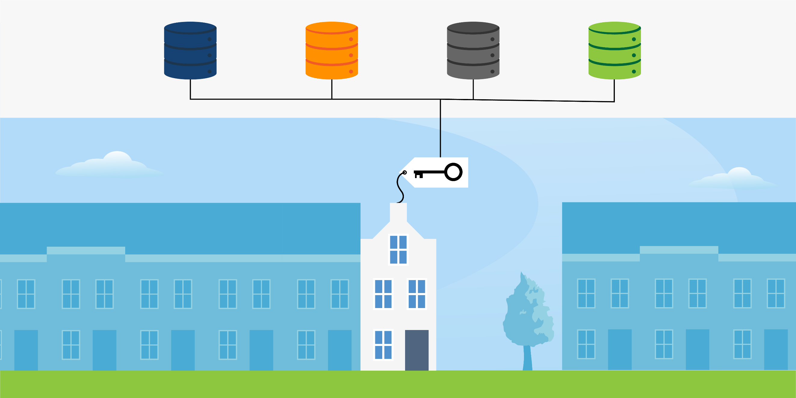

[Samenvatting]
[Status van het document]

Versie
v0.75 Concept voor Consultatie
Datum
12 april 2021
Geonovum
Inhoudsopgave
1.2 Zoektocht naar het hoe en waarom van een UOI-code 8
1.3 Doel van een UOI-code stelsel 13
1.4 Samenhang met SOR-traject 15
1.6 Unieke identificatie van objecten 17
1.8 Kennis van verwantschappen 19
1.9 Gehanteerde ontwerpprincipes 20
1.10 Vijf oplossingsrichtingen onderkend 20
Componenten UOI-code-stelsel 22
2.1 Object & haar verschijningsvormen 22
2.2 Componenten van een UOI-code-stelsel 24
2.3 Werking op hoofdlijnen – UOI-code-stelsel 25
2.4 UOI-code en uitgifte regime 27
2.5 Relaties & regime UOI-objecten 30
2.6 Verwantschappen & regime UOI-object 31
2.7 Formaliseren van UOI-object verwantschappen & relaties 33
2.8 Faciliteren leggen van UOI-object verwantschappen & relaties 35
2.9 Digitale toegang tot de UOI-object-registraties 36
2.10 Organisatorische borging werking UOI-code stelsel 39
Oplossingsalternatieven op een rij 41
3.1 Vijf onderkende alternatieven 41
3.2 UOI-code-stelsel (sober) 42
3.3 UOI-code stelsel met geregistreerde relaties 44
3.4 UOI-code stelsel met geregistreerde verwantschappen 47
3.5 Formeel UOI-code stelsel 48
De UOI-code en praktijksituaties 53
4.1 Bouwwerk Renovatie Paspoort 53
4.4 Energienetwerkaansluitingen 53
Bijlage 1 54
UOI-onderzoeksteam Geonovum 55
Reflecterend expertteam t.b.v. stap 2 en 3 van het 2e onderzoek 55
Bijlage 2
Bijlage 3 57
SOR Functionele eisen waaraan een UOI-code moet voldoen 57
Bijlage 4 61
Toelichting op het begrip kennisgraaf 61
Bijlage 5 63
Toelichting op het mechanisme bounding box 63
Bijlage 6 66
Samenhang NEN 3610 NEN 2660 en NTA 8035 66
Bijlage 7 67
Overzicht semantische operatoren 67
Regie op bouwgegevens
Het project “Regie op Bouwgegevens” beoogt de informatievoorziening binnen de bouwsector (publiek & privaat) te verbeteren. De Unieke Objectidentificator (UOI), richt zich daarbinnen specifiek op het ontwikkelen van een unieke objectidentificatie. Deze UOI-code moet het mogelijk maken om gegevens op verantwoorde en betrouwbare wijze te kunnen registreren, uitwisselen (delen) en koppelen aan andere gegevens. Onderliggend wordt hiermee beoogd de gegevens over objecten in de gebouwde omgeving domein-overstijgend te kunnen delen, waarbij de UOI-code het identificeren verzorgt.
Vervolgonderzoek
Dit document bevat de onderzoeksresultaten van een verdiepend onderzoek naar de (on-) mogelijkheden van het gebruik van een UOI-code om objecten in de gebouwde omgeving persistent uniek te kunnen identificeren. “In een eerdere fase (de eerste onderzoeksfase) is een eerste opzet ontworpen door een consortium van Fibree, Kadaster en BZK. Bij de huidige (de tweede onderzoeksfase) heeft BZK Geonovum betrokken om het ontwerp van de UOI beter af te stemmen op bestaande standaarden, zoals NEN 3610, NEN 2660 & NTA 8035 en de manieren waarop deze omgaan met identificatie (zoals o.a. toegepast bij een aantal basisregistraties) en ook op de ideeën ten aanzien van identificatie vanuit DiS Geo (de samenhangende objectenregistratie, SOR).
Object versus informatie-object
De eerste vraag die het onderzoeksteam zich heeft gesteld, is waaraan een UOI-code moet worden toegekend. Daarbij is van belang te bedenken dat elk domein een eigen kijk op de werkelijkheid kan hebben en dus eigen informatie-objecten kan hebben gedefinieerd. Allereerst is vastgesteld dat de UOI-code aan een informatie-object moet worden toegekend. Dat informatieobject kan zowel gegevens bevatten over een fysiek of een virtueel object in de gebouwde omgeving. De UOI-code wordt dus gekoppeld aan de informatieobjecten over de fysieke dan wel virtuele dingen (en dus niet aan die dingen zelf omdat de objectdefinities daarvan per domein kunnen verschillen).
Vorm van een UOI-code
Aanvankelijk leek de ontwerpopgave zich te concentreren op de vorm van de UOI-code. Binnen een recente SOR-consultatie is vastgesteld dat deze vooral uniek, persistent en machine-leesbaar moet zijn. Daarmee kan de UOI-code bijvoorbeeld via een UUID[1] Als UUID bevat een UOI-code een unieke reeks karakters.
of URI[2] Als URI zullen in een UOI-code waarschijnlijk een <namespace> en een <identifier> te herkennen zijn.
-strategie worden vormgegeven. Ook is een UOI-code op basis van bestaande domein-ID’s denkbaar.
Gebouwde omgeving
De gebouwde omgeving is in dit kader gedefinieerd als de verzameling domeinen waar gegevens in de vorm van informatieobjecten worden vastgelegd over:
Alle fysieke[3] Fysiek (materieel of reëel)
objecten die als onroerende zaken worden aangeduid (zoals gebouwd, geplaatst, geïnstalleerd, gelegd, aangelegd dan wel duurzaam aanwezig in de grond of het water maar ook niet-gebouwde fysieke objecten die wel van belang zijn voor de gebouwde omgeving zoals aanwezig in de topografische basisregistraties);
Alle virtuele[4] Virtueel (immaterieel of niet-reëel)
objecten die vanuit wet- en regelgeving en/of maatschappelijk verkeer gerelateerd zijn aan de fysieke objecten (zoals over gebruik, eigendom, heffing, subsidie, vergunning, adres, werkingsgebieden, beheergebieden, verzorgingsgebieden).
Niet meegenomen in de reikwijdte t.b.v. de UOI-code worden onderwerpen als:
Gebeurtenis-gebaseerde zaken (transacties) (zoals levering, overdracht, vergunning, enz.) betreffende de hierboven genoemde objecten;
De productie van bouwmaterialen & bouwproducten (hiervoor wordt de GS1-code[5] GS1-code is een productcode die veel gebruikt wordt in de productie-industrie
veel gebruikt).
Bouwproducten & -materialen & de UOI-code
Bouwproducten en -materialen krijgen mogelijk pas bij installatie of gebruik pas een UOI-code. Namelijk wanneer er een verbinding kan worden gelegd tussen het geserialiseerde[6] Bouwproducten kennen een type en een serienummer. Het achterhalen van materiaaleigenschappen of gebruikte materialen kan per serie verschillen.
bouwproduct en hun toepassing in een bouwobject.
Domein-onafhankelijke uitgifte van de UOI-code
Domeinen kennen elk hun eigen manier van indelen naar klassen (taxonomie) of structuur (meronomie). Soms zijn structuur-relaties (deel/geheel)[7] Meronomie: relaties die deel geheel of compositie/aggregatie van objecten definiëren (Gebouw bestaat uit verblijfsobjecten en verblijfsobjecten uit ruimten enz.)
in een domein vast gedefinieerd, soms variabel te benoemen zoals het IFC-model dat mogelijk maakt. Ook zaken zoals de tijdvolgordelijkheid van informatieobjecten (filiatie) worden veelal door de domeinen zelf bepaald. We beogen we de uitgifte van de UOI-code te ontkoppelen van domeinspecifieke keuzes en semantiek Er is dus een uitgifte-/generatieregime voor UOI-codes nodig dat onafhankelijk de “eeuwigdurendheid” van het informatieobject op UOI-code-niveau garandeert
Ruimere vraagstelling
Het onderzoeksteam van Geonovum en Kadaster heeft na de validatie van het eerste onderzoekrapport geconcludeerd dat het succesvol delen en kunnen gebruiken van gegevens over objecten uit de gebouwde omgeving meer vraagt dan alleen een unieke objectidentificatie. De ontvanger moet gegevens ook kunnen relateren aan eigen objecten en gegevens en ze semantisch kunnen interpreteren. Deze aanvliegroute werd door het ingestelde UOI-expertteam beaamd. Dit inzicht heeft in overleg met de opdrachtgever geleid tot een ruimere vraagstelling, waarin naast de identificatie (UOI-code) ook de semantische interpretatie via een verwantschapsontologie en een strategie voor het vinden van de relatie op instantieniveau zijn meegenomen. Daarmee is de vraag over de UOI-code verruimd tot een over een UOI-codestelsel.
Domein-onafhankelijk kunnen verbinden
Domeinen hanteren eigen objectdefinities, spelregels voor vastleggen van de geometrie, functie van het object, de opbouw van de deel/geheel relaties, alsmede spelregels hoe met levensloop wordt omgegaan en of objecten wel of niet worden opgenomen in de eigen registratie. Het kunnen verbinden van domeingegevens vraagt om mogelijkheden semantisch te kunnen interpreteren zonder te moeten harmoniseren. Dat wordt gezien als de opgave voor een werkend UOI-code-stelsel.
Paraplumechanisme om te verbinden
Een UOI-codestelsel is dus een overkoepeld stelsel dat als een paraplumechanisme aangesloten domeinen weet te verbinden, waardoor gegevens in de domeinregistraties gezocht, gevonden en semantisch geïnterpreteerd kunnen worden. Het is uitdrukkelijk iets erbij en niet in plaats van. Domeinen worden gezien als zelfstandige informatiestelsels met eigen besturen en spelregels. Een UOI-codestelsel met de voorgestelde wegwijzer voor semantisch interpreteren geeft beperkte regie op samenhang, is schaalbaar in omvang en kwaliteit en richt zich op het verbinden van bestaande registraties. Het is daarmee een soort paraplumechanisme voor de registraties die de gebouwde omgeving tot hun domein rekenen.
Het doel van een UOI-codestelsel is het vereenvoudigen van het domeinoverstijgend zoeken, vinden en semantisch interpreteren van gegevens over objecten in de gebouwde omgeving.
Samenhang met de SOR
De SOR in wording stuurt op volledigheid en maximale kwaliteit en is groeiende in harmonisatie en aansluitbaarheid. De SOR is daarmee een soort "kapstokdomein", waarbinnen het UOI-mechanisme ook moet kunnen worden toegepast.
Alternatieven variëren qua functionaliteit
De beschreven alternatieven voor een UOI-codestelsel dekken deze principes van identificeren, semantisch interpreteren en relateren in meer of minder mate af. De geboden functionaliteit van de alternatieven hangt ook samen met de keuze om relaties en semantische verwantschappen vooraf klaar te zetten in plaats van achteraf te construeren. De alternatieven voor een UOI-codestelsel komen voort uit het variëren op aspecten zoals federatieve tegenover centrale voorzieningen, meer regie tegenover minder regie en meer impact tegenover minder impact op bestaande registraties.
Het onderzoeksteam heeft vijf alternatieven voor een UOI-codestelsel onderkend. Elk alternatief maakt wel of niet gebruik van mechanismes voor het identificeren, semantisch interpreteren en relateren van informatieobjecten. Onderstaande tabel typeert deze in het kort.
Hfst | Oplossingsvariant | Bevat expliciet vooraf | Dus zelf blijven doen |
3.2 | Sober UOI-codestelsel | Alleen UOI-codes | Verwantschap bepalen en relaties leggen |
3.3 | UOI-codestelsel + verwantschappen | UOI-code + verwantschappen | Zelf relaties leggen |
3.4 | UOI-codestelsel + relaties | UOI-code + relaties | Zelf verwantschappen bepalen |
3.5 | Formeel UOI-codestelsel | UOI-code + verwantschappen + relaties | Zelf de zoekvraag formuleren en antwoorden interpreteren |
3.6 | Geen UOI-codestelsel | Gebruikt domein-ID’s Geen UOI-code | Alles zelf doen, relateren en verwantschappen achteraf bepalen |
@@@In acht te nemen aspecten
Domeinen en registraties moeten zich stapsgewijs kunnen aansluiten. Daarom worden de uitgegeven/gegenereerde UOI-code, de vastgelegde relaties en de uitgevoerde semantische interpretaties bij het ontstaan van nieuwe objecten in de gebouwde omgeving. Ook moeten gegevens over bestaande objecten kunnen worden aangemeld voor opname in het UOI-codestelsel.
SWOT-analyse na consultatie
Het onderzoeksteam heeft nu nog geen voorkeur voor alternatieven. Eerst zal een eerste consultatie plaatsvinden. Daarna is een SWOT-analyse voorzien, waarna een tweede consultatie zal volgen. Het onderzoeksteam volgt hier qua consultatie dezelfde werkwijze als BZK voor de SOR.
Vele vormen van relaties
Informatiebruggen worden gebouwd via de relaties tussen de met UOI-codes aangeduide informatieobjecten. De aard van deze relatie tussen informatieobjecten kan variëren van semantische relaties (zoals “komt exact overeen” en “maakt deel uit van”) tot “heeft een ruimtelijke relatie“ en wordt via een verwantschapsontologie benoemd.
Dergelijke relaties kunnen langs twee wegen worden gelegd: op basis van locatie (ruimtelijke analyse) of via identificerende codes. In de praktijk gaat het toekennen van de unieke identificerende code vaak langs beide wegen. Soms geven we het object een domeinidentificatie en relateren het daarna aan een locatie en soms verloopt dat andersom. Een ontwerp voor een type woning behoeft geen locatie te hebben en kan voor meerdere locaties hergebruikt worden. Zo krijgt een prefab-bouwobject pas een locatie wanneer deze geplaatst wordt. Tegen de achtergrond van duurzaam hergebruik kunnen bouwobjecten vaker hergebruikt gaan worden en zal dan hun locatie gedurende hun levensloop kunnen veranderen.
De ontstane relaties tussen informatieobjecten (die over hetzelfde fysieke of virtuele object gaan) kunnen naar keuze in de bestaande objectregistraties of in een voor iedereen toegankelijke registratie worden vastgelegd. Deze registratie van UOI-relaties kan een centraal of federatief[8] Decentrale opslag binnen federatief regime
karakter dragen.
Organisch groeiend én meerwaarde
Daarbij is het van belang aan te geven dat we aan een organisch groeiend federatief stelsel denken dat zich behoefte-gestuurd kan ontwikkelen als er meerwaarde is. Of die veronderstelde meerwaarde bestaat, zullen we na de consultatie in een aansluitende SWOT-analyse proberen vast te stellen. Daarbij komen ook aspecten als bijhouden, robuustheid, organisch kunnen groeien, zelforganisatie, regie, impact op de bestaande registraties e.d. aan de orde.
Ongeacht waar de UOI-code wordt vastgelegd of welke vorm voor de UOI-code wordt gekozen, moet de UOI-code “eeuwigdurend” kunnen worden gevonden. Onvindbaarheid van de UOI-code, van de domeinregistratie waarin de gegevens van het informatieobject zich behoren te bevinden of van het informatieobject in de domeinregistratie schaadt de betrouwbaarheid en de werking van het UOI-codestelsel.
Knooppunt-entiteiten als verbinders
Het onderzoeksteam verwacht dat alleen aan zogenoemde knooppuntentiteiten UOI-codes hoeven te worden uitgegeven en wil dat in de casussen toetsen. Knooppuntentiteiten zijn entiteiten (objecttypes) die een verbindende schakel vormen in het relateren tussen domeinen. Binnen de domeinregistratie kan immers via de UOI-code en de gevonden domein-ID verder worden gezocht. De informatiebrug is dan gelegd. Dat zou kunnen betekenen dat niet aan alle entiteiten in de aangesloten domeinen UOI-codes behoeven te worden gegeven.
Kennisgraaf
Verwantschappen tussen entiteiten uit meerdere domeinen kunnen worden vastgelegd in een kennisgraaf[9] Dat is een model waarin de verwantschappen tussen entiteiten uit meerdere domeinen beschreven worden. Zie ook bijlage 4.
. Verwantschapsoperatoren geven dan aan hoe instanties moeten worden behandeld, bijvoorbeeld bij een exacte verwantschap, maar ook bij indicatieve verwantschappen. Daarbij is het onvermijdelijk dat het gebruik van indicatieve verwantschappen soms kan leiden tot onjuiste conclusies, zelfs als de gegevens in de domeinregistraties foutloos zouden zijn.
Praktijksituaties
Hoofdstuk 4 van dit onderzoeksrapport zal aanvullende praktijksituaties gaan beschrijven waarin elk van de onderkende alternatieve UOI-codestelsels haar specifieke meerwaarde biedt. In hoeverre deze meerwaarde opweegt tegen de inspanningen en impact van elk alternatief, zal later in de SWOT-analyse worden onderzocht.
De gehanteerde casusbeschrijvingen zijn:
Bouwwerkrenovatiepaspoort (i.s.m. Fibree c.s);
Opleverdossier (Dossier bevoegd gezag) (i.s.m. Kadaster c.s.);
Materiaalcertificaten (i.s.m. Fibree c.s.);
Energienetwerkaansluitingen (i.s.m. Kadaster c.s.).
Onderwerp van dit rapport is een UOI-code én een UOI-code-stelsel. We nemen u in hoofdstuk 1 ook mee in onze zoektocht rondom het hoe en waarom van een UOI-. Ook schetsen we onze constatering dat het ontstaan van een UOI-code stelsel als een stuk faciliterende infrastructuur zou mogen worden afgewogen. Het UOI-code stelsel fungeert dan als voor domein-overstijgende infrastructuur voor het vinden van objectgegevens. We beschrijven tevens het doel van een UOI-code voor de gebouwde omgeving. Ook komt de definitie van de gebouwde omgeving in deze context ter sprake. Daarnaast worden drie principes geïdentificeerd om domein-overstijgend objecten te kunnen zoeken, vinden en interpreteren. Tenslotte worden de vijf onderkende alternatieven voor een UOI-code-stelsel, op hoofdlijnen benoemd.
De inhoud van het rapport is soms technisch of zo u wilt theoretisch van aard omdat het hier om fundamentele domein overstijgende principes gaat. De lezer die alleen een algemeen beeld wil hebben kan in principe volstaan met de samenvatting. Voor de meer in detail of techniek geïnteresseerden is meer detail in deze rapportage beschreven en zijn een serie bijlages opgenomen. Hen raden we aan het 1e onderzoeksrapport eerst te lezen.
We beginnen dit hoofdstuk 1 met een beschrijving van het fenomeen UOI-code als identificator van objecten in de gebouwde omgeving. We nemen u mee in onze zoektocht naar het hoe en waarom van een UOI-code. We laten u zien dat de UOI-code aan een informatie-object wordt toegekend en dat een informatieobject een domein specifieke manier van kijken naar een object omvat. Ook nemen we u mee in het onderscheid tussen fysieke en virtuele objecten.
Al snel nemen we u mee in de constatering dat de UOI-code een vorm van domein overstijgend verbinden mogelijk maakt, maar dat het beantwoorden van domein-overstijgende vragen meer vraagt. Daartoe bouwen we een doelenboom op, waarmee we laten zien wat er nodig is om te kunnen identificeren, relateren en semantisch te interpreteren.
We schetsen de samenhang met de SOR (Samenhangende Objecten Registratie) en geven een definitie van de objecten in de gebouwde omgeving. We verdiepen op de principes identificeren, relateren en semantisch interpreteren en introduceren de verwantschaps-ontologie.
We sluiten de inleiding af met het benoemen van de gehanteerde ontwerpprincipes en onderkende alternatieven voor een UOI-code-stelsel
In hoofdstuk 2 wordt het object en haar verschijningvormen nader toegelicht. Hier wordt ook het concept van een verbinder geïntroduceerd. Daarna volgt een beknopt overzicht van de onderkende componenten van het UOI-code-stelsel en de primaire werking van een UOI-code stelsel.
Er volgt daarna in paragraaf 2.4 een uitwerking op het aspect identificeren met de UOI-code. Hier komen ook de beelden over het uitgifteregime aan de orde. We duiden in deze paragraaf ook ons vermoeden dat UOI-codes alleen aan zogeheten knooppunt-entiteiten behoeven te worden gegeven.
In paragraaf 2.5 gaan we nader in op het principe van relateren van objecten die aangeduid zijn met een UOI-code. We geven nader inzicht in de linksets die hierdoor ontstaan.
Daarna wordt in paragraaf 2.6 het principe van semantisch interpreteren via onderkende verwantschappen op entiteitniveau toegelicht. Hier introduceren we de verwantschapsontologie en positioneren de kennisgraaf als hulmiddel daarbij.
In paragraaf 2.7 leggen we uit dat een formeel UOI-code-stelsel met functionaliteit voor identificeren, relateren en semantisch interpreteren waarde heeft voor hen die antwoorden op domein-overstijgende vragen willen kunnen vinden.
Daarna komen in paragraaf 2.8 en 2.9 de faciliterende componenten van het UOI-code-stelsel en het garanderen van digitale toegang van de onderkende registraties van het UOI-code-stelsel aan de orde. Tenslotte worden in paragraaf 2.10 de organisatorische borging van het beheer en het in stand houden van het UOI-code-stelsel op hoofdlijnen beschreven.
De lezer heeft nu een beknopt beeld van wat het UOI-code-stelsel beoogt te kunnen bieden, uit welke componenten het UOI-code-stelsel bestaat en hoe de drie aspecten identificeren, relateren en semantisch interpreteren daar een rol in spelen.
In hoofdstuk 3 worden daarna de oplossingsalternatieven met de werknamen (1) Sober UOI-code-stelsel, (2) UOI-code-stelsel met verwantschapsregistratie, (3) UOI-code stelsel met relatieregistratie en (4) Formeel UOI-code stelsel geduid en uitgewerkt. Hier komen voor elk van de alternatieve oplossingen de karakteristieken aan bod. Ook wordt het nul-alternatief (geen UOI-code-stelsel) toegelicht.
In hoofdstuk 4 gaan we in het voorjaar van 2021 aan de hand van enkele praktijkgevallen laten zien hoe de UOI-code, de verwantschapsontologie en het relateren kan verlopen. Dit deel is bij de 1e consultatie nog niet beschikbaar.
In de bijlagen vindt u een lijst van geraadpleegde documenten en geraadpleegde experts maar ook nadere toelichting op het mechanisme van filiatie, de eisen aan een identificerende code zoals de UOI-code, de logica en werking van de kennisgraaf en ruimtelijke analyse volgens het mechanisme van het omhullende volume.
Het project “Regie op Bouwgegevens” beoogt de informatievoorziening binnen de bouwsector (publiek & privaat) te verbeteren. De Unieke Objectidentificator (UOI), richt zich daarbinnen specifiek op het ontwikkelen van een unieke objectidentificatie. Deze UOI-code moet het mogelijk maken om gegevens op verantwoorde en betrouwbare wijze te kunnen registreren, uitwisselen (delen) en koppelen aan andere gegevens. Onderliggend wordt hiermee beoogd de gegevens over objecten in de gebouwde omgeving domein-overstijgend te kunnen delen, waarbij de UOI-code het identificeren verzorgt.
Dit document bevat de onderzoeksresultaten van een verdiepend onderzoek naar de (on-) mogelijkheden van het gebruik van een UOI-code om objecten in de gebouwde omgeving persistent uniek te kunnen identificeren. “In een eerdere fase (de eerste onderzoeksfase) is een eerste opzet ontworpen door een consortium van Fibree, Kadaster en BZK. Bij de huidige (de tweede onderzoeksfase) wil BZK ook Geonovum betrekken om het ontwerp van de UOI beter af te stemmen op bestaande standaarden, zoals NEN 3610, NEN 2660 en NTA 8035, en de manieren waarop deze omgaan met identificatie (zoals o.a. toegepast bij een aantal basisregistraties) en op de ideeën ten aanzien van identificatie vanuit DiS Geo (de samenhangende objectenregistratie, SOR).
We zijn het ontwerpproces eind 2020 naar een UOI-code ingestapt met de bagage zoals opgetekend in het Fibree-rapport van mei 2020. Daarin wordt vooral gefocussed op de vorm van de UOI-code als unieke object identificator en de meerwaarde die bereikt kan worden wanneer alle objecten in de gebouwde omgeving een UOI-code hebben respectievelijk krijgen.
 |
Figuur 1: UOI-code als sleutel tot gegevens over de gebouwde omgeving (bron Fibree) |
Fibree heeft ook een filmpje gemaakt die de beoogde werking van de UOI-code toelicht.
Het onderzoeksteam van Geonovum en Kadaster heeft na de validatie van het eerste onderzoekrapport geconcludeerd dat het succesvol delen en kunnen gebruiken van gegevens over objecten uit de gebouwde omgeving meer vraagt dan alleen een unieke objectidentificatie. De ontvanger moet gegevens ook kunnen relateren aan eigen informatie-objecten en gegevens en ze semantisch kunnen interpreteren. Deze aanvliegroute werd door het ingestelde UOI-expertteam beaamd. Dit inzicht heeft in overleg met de opdrachtgever geleid tot een ruimere vraagstelling, waarin naast de identificatie (UOI-code) ook de semantische interpretatie via een verwantschapsontologie en een strategie voor het vinden van de relatie op instantieniveau zijn meegenomen. Daarmee is de vraag over de UOI-code verruimd tot een over een UOI-codestelsel.
Validatie
Via een validatie hebben we ons afgevraagd welke onderwerpen nog niet toereikend in ogenschouw genomen waren en nader onderzoek vereisen. Daaruit kwamen de volgende aspecten voor nader onderzoek naar voren:
Welke alternatieven zijn er voor de UOI-code
Welke soort objecten krijgen mogelijk een UOI-code.
Wat is de samenhang met het stelsel van geo-basisregistraties
Welke logica bestaat er tussen UOI-code als middel en de doelen daarbij zoals semantisch begrijpen
Wat levert een UOI-code voor belanghebbenden nu op
Welke alternatieven zijn er binnen een UOI-code oplossing
Hoe werkt het UOI-code-uitgifte mechanisme, -regime en de governance daarbij.
We hebben ons als onderzoeksteam daarbij ook een aantal principiële vragen gesteld om de hiervoor genoemde vragen te kunnen gaan beantwoorden. Daarom beschrijven we die hierna.
@@@Identificatie om te kunnen relateren
Identificatie van objecten ondersteunt het proces van relateren van objecten. Objecten waarvan gegevens zijn vastgelegd in uiteenlopende registraties. Mensen en organisaties willen steeds vaker gegevens uit de ene domein-registratie kunnen verbinden met die uit andere domein-registraties. Daartoe zoeken ze een sleutel waarmee de registraties onderling te verbinden zijn. Wanneer die sleutel éénduidig de relatie tussen objecten in registraties legt, kan over registraties heen gezocht en gevonden worden. Dat veronderstelt wel dat we die registraties kunnen vinden en benaderen[10] Zie ook het 5-sterrenmodel (Tim Berners Lee)
.
Semantisch begrijpen
Dat veronderstelt ook dat er semantisch overeenstemming is te bereiken over het feit dat de objectdefinitie van het sleutelobject in het ene domein enigszins overeenkomt met de objectdefinitie van het sleutelobject in de andere registraties. Dat kan de mens achterhalen door onderzoek en afstemmen. Wanneer een machine dat wil doen, moeten die objectdefinities ook vindbaar en interpreteerbaar zijn voor de machine.
Aspecten om in acht te nemen
Na een eerste inventarisatie naar aspecten die in acht genomen moeten worden bij het ontwerpen van een UOI-code-stelsel, voor zowel fysieke als virtuele[11] Zie definitie fysiek en virtueel object en gehanteerde synoniemen in paragraaf 2.1
objecten in de gebouwde omgeving, kwamen de onderstaande aspecten van de kijk op een object naar voren:
Semantiek (objectdefinitie en afbakeningsregels)
Vorm (vastgelegd in geometrieën) (veelal bepaald door de domeinspelregels zoals definitie)
Opbouw (vastgelegd in (de)compositie structuren)(topologische relaties)
Functie (vervult een functie in het geheel gezien door de domeinbril zoals in System Engineering zoals gevel-sluitende werking)
Levensloop van objecten in de werkelijkheid[12] inclusief digitale duurzaamheid van registraties
Dus: Het (fysieke of virtuele) object heeft haar eigen semantiek, een vorm, kent een opbouw, functie en levensloop enz. Deze eigenschappen van het object kunnen gedurende de levensloop veranderen (toevoegen, wijzigen, verdwijnen) waarbij dat in de verschillende registraties, waar gegevens over dat object zijn vastgelegd, niet perse op hetzelfde moment gebeurt ondanks het feit dat ze mogelijk het over hetzelfde ding hebben.
Daarnaast kan een object ook een geografische locatie hebben. De vorm (de ruimte beschreven door de geometrie(ën)) van het object kan op deze locatie geprojecteerd[13] Projectie vanuit BIM modellen is op het platte vlak en niet op de aardbol (er kunnen afwijkingen ontstaan)
worden, zodra deze locatie (geo-referentie) bekend wordt. Zie ook paragraaf 1.6.
Tenslotte noemen we het fenomeen van filiatie waarbij functioneel onderkende eenheden (met een vorm en opbouw) binnen de levensloop van een object veranderen. Bijvoorbeeld door splitsen en samenvoegen. Feitelijk wordt hiermee de tijdvolgordelijke verandering van functioneel onderkende eenheden in registraties vastgelegd. De UOI-code moet met dit fenomeen kunnen omgaan. (zie ook bijlage 2)
We hebben dat in onderstaande figuur getracht te visualiseren. In deze figuur zijn twee vormen van wijzigen expliciet gevisualiseerd (toevoegen en wegnemen) Uiteraard behoort ook veranderen daartoe.
Al deze aspecten spelen een rol bij het kunnen bepalen waaraan je wanneer een UOI-code kan, wil toekennen omdat ze domein-gebonden invloed kunnen uitoefenen op het object waaraan de code wordt toegekend.
Figuur 2. Manieren van kijken naar een object |
@@@Strategieën om te verbinden
We hebben de vraag gesteld: ”Waar wijs je een UOI-code nu aan toe?”
We hebben daarop vier dominante strategieën onderkend om objecten via een identificator te verbinden.
Het UOI-code-stelsel legt definities voor fysieke objecten vast en kent aan die objecten een UOI-code toe.
Het UOI-code-stelsel legt definities voor fysieke & virtuele objecten vast en kent aan die objecten een UOI-code toe.
UOI-code toewijzen aan informatie-objecten in bestaande registraties, die dan onderling verwijzen naar elkaar (virtueel & fysiek)
UOI-code toewijzen aan informatie-objecten in bestaande registraties en de onderlinge verwijzingen vastleggen in een gemeenschappelijk toegankelijke dataset (virtueel & fysiek)
Deze zijn gevisualiseerd in onderstaande figuur. In de strategieën zitten twee ontwerpkeuzes opgesloten:
Het wel of niet meenemen van kunnen verwijzen naar/tussen registraties die virtuele objecten in de gebouwde omgeving vastleggen (een scope keuze)
Het wel of niet kiezen voor een “nieuwe verbinder” waar de UOI-code aan wordt toegekend.
Strategie 1 (verwijzen naar fysiek object en aan fysiek object een UOI-code toewijzen) veronderstelt dat we in de gebouwde omgeving het eens kunnen worden over de objectdefinitie en het moment van ontstaan en verdwijnen van het fysieke object. In deze strategie wordt een identificatie (UOI-code) aan elk fysiek object gegeven. Deze strategie lijkt niet realistisch want de praktijk laat zien dat er even zo veel beelden van de werkelijkheid bestaan als er domeinen bestaan. Dergelijke beelden zijn meestal geen gedeelde beelden. Daarnaast bestaan er virtuele objecten (die in het geo-domein veel voorkomen) en deze worden zo niet afgedekt.
Strategie 2 Strategie 2 is op hetzelfde principe gebaseerd, maar dan zowel voor fysieke als virtuele objecten. Deze strategie lijkt eveneens niet realistisch want de praktijk laat zien dat er vele beelden van de werkelijkheid bestaan wat niet gedeelde beelden behoeven zijn
Strategie 3 (onderling verwijzen naar objecten) veronderstelt dat we in staat zijn de semantische overeenkomst van een informatie-object (fysiek dan wel virtueel) te duiden. In deze strategie wordt in elk domein een lokale identificatie aan elk informatie-object gegeven. Door de verbindingen tussen deze lokale ID’s vast te leggen bij de domeinregistraties, kunnen de verbindingen op instantie-niveau gekend worden. Elk domein moet dan deze relaties gaan vastleggen en deze deelbaar maken voor derden.
Strategie 4 (realiseren van een gedeelde registratie van relaties tussen objecten). In deze strategie wordt een identificatie (UOI-code) aan het onderkende verbindende informatie-object gegeven. Er ontstaan (verzamelingen van) koppelparen van verbonden informatie-objecten die elk een UOI-code hebben verkregen. Deze linksets worden vastgelegd en voor een ieder ontsloten. Je bouwt hier als het ware organisch een gedeeld stelsel van geregistreerde verbindingen op.
Figuur 3: Strategieën om een identificator toe te wijzen om te kunnen verbinden |
In alle strategieën moeten we, aanvullend op de identificatie en semantische interpretatie, de overeenstemming over het ruimtelijk voorkomen in de gebouwde omgeving kunnen vaststellen, tenzij deze relatie direct bij ontstaan door de creator wordt gelegd. Dit ten behoeve van het kunnen relateren. Het kan gaan om gepland, huidig of voormalig voorkomen op dezelfde geografische locatie of binnen in hetzelfde ruimtelijke volume.
Na deze beschouwing vooraf die u meenam in onze overwegingen voorafgaande aan het ontwerp nemen we u nu mee in het UOI-code stelsel. Daarbij is het van belang aan te geven dat we aan een organisch groeiend federatief stelsel denken dat behoefte gestuurd zich kan ontwikkelen onder de aanname dat er meerwaarde is. Of die meerwaarde na het ontwerp (na verkregen inzicht in de oplossing en haar consequenties) blijft bestaan, zullen we in een aansluitende SWOT-analyse na de consultatie proberen vast te stellen. Daar zullen ook aspecten zoals bijhouden, robuustheid, organisch kunnen groeien, zelforganisatie, regie e.d. in ogenschouw worden genomen.
Het doel van een UOI-code-stelsel is het vereenvoudigen van het domein-overstijgend zoeken, vinden & semantisch interpreteren van gegevens over objecten in de gebouwde omgeving.
Een UOI-code-stelsel is dus een overkoepeld stelsel dat als een netwerkparaplu aangesloten domeinen weet te verbinden waardoor gegevens in de domeinregistraties gezocht, gevonden en semantisch geïnterpreteerd kunnen worden. Het is uitdrukkelijk iets erbij, erop en niet in plaats van. Domeinen worden gezien als zelfstandige informatiestelsels met eigen bestuur en spelregels.
De verbinding die met de UOI-code gelegd wordt, is identificerend en ook een relatie en semantische verwantschap beschikbaar-stellend stelsel, waarmee gebruikers hun domein-overstijgende vragen over objecten makkelijker kunnen beantwoorden.
We laten in onderstaande doelenboom zien hoe middelen worden ingezet om dat doel te bereiken. Het ingezette middel wijst in de figuur omhoog naar het doel dat het middel ondersteunt. Een doel dat aangewezen wordt door een onderliggend middel is zelf weer een middel voor het bovenliggend doel. Zo ontstaat een doelen-middelen-hiërarchie die ook wel een doelenboom wordt genoemd.
Figuur 4: Primaire doelenboom UOI-code stelsel |
We lichten de afgebeelde doelenboom nader toe en beginnen daartoe rechtsonder. We kijken dus primair naar dat wat nodig is om te identificeren, relateren en semantisch interpreteren. < Semantisch redeneren?>
Uniek domein-overstijgend identificeren
Om gegevens over objecten in de gebouwde omgeving te kunnen vinden, willen we deze objecten allereerst domein-overstijgend kunnen identificeren. Dit om zeker te weten dat de gegevens van het informatie-object, dat wordt aangeduid met de UOI-code, over hetzelfde gezochte object in de werkelijkheid bevatten.
Identificatie kan langs meerdere wegen plaatsvinden. Via de geografische locatie of via een identificator (een unieke sleutel) zoals de BAG-ID of een andere identificator. Adressen worden heel vaak als locatie-aanduiding gebruikt, maar niet alles heeft een adres (ook niet in de BAG), niet iedereen gebruikt de BAG en soms is er behoefte aan meer precisie, zoals ‘waar’ binnen een gebouw of diens structuur. Één unieke identificator voor alle objecten in de gehele gebouwde omgeving ontbreekt nog. En daar komt het idee van een UOI, een Unieke Object Identificator, vandaan. Wanneer in alle registraties, met gegevens over objecten uit de gebouwde omgeving, deze UOI-code aanvullend wordt vastgelegd, zo is het idee, kunnen deze gegevens altijd éénduidig worden gevonden en gebruikt.
Relaties tussen objecten
Met een UOI-code kunnen weliswaar informatie-objecten éénduidig worden gevonden, maar niets garandeert ons dat daarmee ook de feitelijke relaties van deze informatie-objecten onderling bekend is. Je zou kunnen redeneren dat wanneer twee informatie-objecten zich op dezelfde locatie bevinden, deze ook een relatie hebben en dat is natuurlijk ook zo; deze informatie-objecten hebben een ruimtelijke relatie[14] In 3D is dat anders dan geprojecteerd in bij 2D. Een woning boven een metrotunnel hoeft helemaal niets met die tunnel van doen te hebben, maar in 2D kun je dat niet met zekerheid uit de kaart afleiden.
. Wat die ruimtelijke relaties precies betekent, wordt niet door de ruimtelijke relatie expliciet gemaakt. Dat moet uit meer opgehaalde betekenis duidelijk worden.
Vaak zijn we ook op zoek naar andere of meer soorten relaties. We willen bijvoorbeeld de relatie qua structuur ((de)compositie)(wat maakt deel uit van wat) van specifieke objecten graag kennen om specifieke vragen te kunnen beantwoorden. Daartoe moeten ofwel deze relaties op instantieniveau zijn vastgelegd of afleidbaar zijn.
Verwantschappen
Het kunnen afleiden van relaties tussen informatie-objecten wordt mogelijk doordat er voor een domein vaak informatiemodellen zijn gemaakt en gepubliceerd. In deze domein-informatiemodellen is de formele samenhang van informatie-objecten vastgelegd. Daarnaast zijn de definities van de gebruikte objecttypen (ook wel entiteiten genoemd) in het model vastgelegd. Per domein is er nu meer semantische duidelijkheid en kunnen gegevens in registraties geduid worden.
Wanneer we meerdere domeinen willen verbinden (domein-overstijgend zoeken & vinden) dan willen we de samenhang leren kennen tussen informatie-objecten die in verschillende domeinregistraties zijn vastgelegd. Om dat te kunnen doen zijn we opzoek naar de verwantschap van informatie-objecten op model niveau. Als we die kennen kunnen we gevonden samenhang ook met meer betekenis in ogenschouw nemen.
Samenvattend
Om domein-overstijgend gegevens over informatie-objecten te kunnen zoeken, vinden en te kunnen interpreteren moeten er drie principes (middelen) worden afgedekt:
Unieke identificatie van informatie-objecten <identificeren>
Kennis van relaties tussen informatie-objecten op instantieniveau <relateren>
Kennis van verwantschappen tussen informatie-objecten op modelniveau <semantisch interpreteren>
Met deze drie middelen zijn verschillende combinaties van middelen te maken waarmee het domein-overstijgend kunnen zoeken, vinden en semantisch interpreteren van gegevens over objecten als een soort infrastructuur voor eenieder te faciliteren is. Alvorens deze drie middelen nader te duiden geven we eerst in paragraaf 1.2 een definitie van de gebouwde omgeving waarop dit ontwerp van het UOI-code-stelsel zich richt.
Hieronder wordt de gesignaleerde samenhang van het UOI-traject met het SOR-traject (Samenhangende Object Registratie in wording) getypeerd:
SOR:
sterke regie op samenhang: Stuurt op volledigheid en maximale kwaliteit, schaalbaar en groeiend in harmonisatie en aansluitbaarheid
UOI-Wegwijzer:
beperkte regie op samenhang: Schaalbaar in omvang en kwaliteit.
Uitgaan van bestaande registraties die verbonden worden
Eind 2020 is dit vervolgonderzoek UOI (Unieke Object Identificator) gestart. Dit omdat het eerste onderzoek gedaan door Fibree & kadaster nog een aantal vragen onbeantwoord had gelaten. De UOI-code richt zich op alle objecten in de gebouwde omgeving, zowel de fysieke[15] Pseudoniemen (Fysiek, materieel, reëel)
als de virtuele[16] Pseudoniemen (Virtueel, immaterieel, niet-reëel)
objecten , en is domein overstijgend. In het huidige gedachtengoed van de UOI-code wordt de UOI-code toegekend aan objecten die in domeinen worden onderkend én tevens op de semantische knooppunten tussen meerdere domeinen liggen. Denk aan de domeinen Waardering en Belastingen (WOZ), Topografie (BGT/BRT), Adressen & Gebouwen (BAG), Eigendom (BKR) maar ook aan verhuur, vastgoedexploitatie, beheer openbare ruimte, beheer netwerken energieaansluitingen, materialenpaspoort enz.)
Eén van de oplossingen is dat er dan ‘als het ware’ op verzoek van de aanvrager een leeg UOI-object als verbinder wordt aangemaakt. Ook worden tevens de verwantschappen van entiteiten in relevante domeinen op modelniveau vastgelegd. Zo kunnen verbindingen op entiteitniveau worden gelegd tussen domeinregistraties. Door analyse langs ruimtelijke en/of (de)compositie wegen kunnen instanties van knooppunt-objecten ook onderling gerelateerd worden. De identificatie van het verbindende UOI-object helpt dat te doen zonder gebruik te maken van lokale ID’s die mogelijk zouden kunnen veranderen. Binnen de SOR veranderen de interne identificatiecodes niet, maar die garantie kan in de bouwwereld niet geboden worden. Een UOI-code-stelsel probeert zowel de sleutel naar objecten als de wegwijzer naar de verbindingen tussen domeinregistraties te bieden. Het UOI-code-stelsel is daarmee een soort paraplumechanisme over de domeinen die zich tot de gebouwde omgeving rekenen. Het wegwijzer principe is gebaseerd op het leggen van relaties tussen (bestaande) registraties met bestaande semantiek, zonder harmonisatie als kern van de oplossing. Het wegwijzer principe is schaalbaar zowel in groei van aangesloten domeinen als kwaliteit van de verbindingen tussen registraties.
Het SOR traject in het programma DISGEO richt zich op het door ontwikkelen naar een Samenhangende Objecten Registratie (SOR) met als voorlopige reikwijdte de geo-basisregistraties BGT, BAG en BRT en elementen van de WOZ en BRK, aangevuld met nieuwe onderwerpen als netwerken. De SOR beoogt daarmee de domeinen Waardering Onroerende Zaken (WOZ), Grootschalige Topografie (BGT), Adressen & Gebouwen (BAG) en Kleinschalige Topografie (BRT) zo te verbinden dat zij als domeinregistraties over hetzelfde fysieke (reële) object buiten (en daarnaast functionele, registratieve en geografische objecttypen) onderling ook éénduidig te verbinden zijn. Het SOR-traject omvat ook waar relevant en haalbaar harmonisatie van objectdefinities & regimes. Elke domeinregistratie heeft haar eigen identificatoren. Binnen de SOR wordt gezocht naar een éénduidige identificator van het (reële / functionele / registratieve / geografische) object waarmee een verbinding tussen de gehanteerde domein- of sector-identificatoren gelegd kan worden. Buiten de objectenregistratie komen extensies voor met sectorale (al dan niet gestandaardiseerde) attributen die via een ID gekoppeld kunnen worden aan de objecten in de objectenregistratie (zo min mogelijk redundante informatie). Het SOR-object is een basisobject met eigenschappen die over meerdere sectoren heen meervoudig worden gebruikt. Het is primair bedoeld als verbinder in het ‘uitklapmodel’. Daarmee kan de SOR getypeerd worden als een kapstok-domein.
Gegevens over objecten in de gebouwde omgeving worden door een groot aantal spelers uit verschillende domeinen gecreëerd, geregistreerd en geraadpleegd. We kijken daarom eerst naar de gehanteerde definitie van de gebouwde omgeving waarin bouwwerken van allerlei aard voorkomen.
Figuur 5: Afbakening gebouwde omgeving |
Het UOI-code-stelsel betreft een representatie van de werkelijkheid met digitale informatieobjecten. De werkelijkheid bestaat uit ‘dingen’ zowel materieel als immaterieel (bijvoorbeeld administratief). Andere termen voor materieel en immaterieel zijn fysiek en virtueel. Een ‘ding’ wordt benoemd met een ‘begrip’: een term en een definitie, zodat we er over kunnen praten en er een gelijke ‘mentale gedachte’ bij hebben. Een ander woord voor begrip is concept.
Als <voorlopige> reikwijdte voor het ontwerp van het UOI-code-stelsel is de volgende definitie voor de objecten aangehouden. (Voor begrippen fysieke en virtuele objecten zie ook paragraaf 2.2)(daar worden synoniemen uit NEN2660, NEN3610 en NTA8035 toegelicht)(zie ook bijlage 6)
Informatie-objecten over:
Alle fysieke objecten die als onroerende zaken worden aangeduid[17] (duurzaam met de aarde verbonden)
Gebouwd < gebouwen, bouwwerken, kunstwerken > …
Geplaatst < objecten in de openbare ruimte, bouwproducten in een bouwobject > …
Geïnstalleerd < installaties, installatieproducten in een bouwobject > …
Gelegd < kabels & leidingen, fysieke netwerken > …
Aangelegd < water- spoor- weginfrastructuur, > < terreinen in de openbare ruimte > …
Aanwezig in de <ondergrond> <grondlichamen><waterlichamen> & op de bovengrond …
Niet gebouwde fysieke objecten die wel van belang zijn voor de gebouwde omgeving zoals aanwezig in de basisregistraties topografie (Topografische/cartografische weergave) …
…
Alle virtuele objecten die vanuit wet- en regelgeving en/of relevant maatschappelijk verkeer gerelateerd zijn aan de fysieke objecten (onroerende zaken) <status gebaseerd> zoals:
Gebruik
Eigendom
Heffing
Subsidie
Vergunning
Adres uit de basisregistratie adressen & gebouwen (BAG)
Werkingsgebieden
Beheergebieden
Verzorgingsgebieden
Enz. …
Niet meegenomen worden in de reikwijdte t.b.v. de UOI-code alle objecten die onderwerpen betreffen zoals:
Gebeurtenis gebaseerde zaken (Transacties) < Zoals levering, overdracht, vergunning enz. > betreffende hierboven genoemde objecten
Productie van bouwmaterialen & bouwproducten (hier wordt de GS1-code gebruikt)
Informatie-objecten over Bouwproducten en bouwmaterialen worden pas bij installatie & gebruik mogelijk van een UOI-code voorzien. Dit zijn vaak geserialiseerde (van een serienummer voorziene) producten die een GS-1 productcode hebben gekregen. Om bijvoorbeeld het materiaalgebruik in een bouwproduct te kunnen achterhalen is het productierecept, wat per reeks serienummers kan verschillen, nodig. Je moet dus weten welke serienummer van een product is geplaatst of geïnstalleerd. Dat kan moeilijk tijdens het ontwerp al bekend zijn en daarom lijkt het alleen mogelijk bij plaatsing/installatie deze relatie te leggen.
Identificatie van objecten kan langs meerdere wegen plaatsvinden. Bijvoorbeeld identificatie door gebruik te maken van de unieke eigenschappen van:
Locatie <ruimtelijk>
Identificerende code
Figuur 6. Identificeren van objecten (bron PDOK en TOBA Architecten) |
@@@Locatie als unieke sleutel
Ruimtelijke analyse kan ons naar een specifieke locatie, ruimte, en/of element brengen. Ruimtelijke analyse kan bijvoorbeeld via Geografische Informatie Systemen (GIS) en/of Ruimtelijke Ontwerp Systemen (CAD) plaatsvinden. Met GIS kan gezocht worden in de geografische projectie van onze gebouwde omgeving en via geografische coördinaten de op onze aarde gekende objecten gevonden worden. Wanneer deze objecten ook als ruimtelijke constructie (vlak/volume en samenstellende vlak/volume-delen) bekend zijn kan aanvullend de ruimtelijke analyse in de geometrieën van het object (voor zover bekend in het GIS) gedaan worden. CAD-systemen richten zich primair op de ruimtelijke constructie. Daar zijn de (vlak/volume en samenstellende vlak/volume-delen) bekend via geometrieën. Wanneer de constructie ook een geo-referentie heeft gekregen (coördinaten & hellingsvlak (XYZ)) kan eveneens de GIS-analyse worden uitgevoerd. Beiden systemen vullen elkaar aan, waarbij CAD-systemen geen geografische projectie (van bol naar vlak/volume) kennen. Bij CAD-systemen moeten de relevante constructies en hun geometrie en samenstellende delen natuurlijk wel bereikbaar zijn, voor nadere ruimtelijke analyse. De domeinafhankelijke regels voor geometrie en kwaliteit van inwinnen maken dat er ruimtelijke verschillen ontstaan die de ruimtelijke analyse bemoeilijken. Daarmee is locatie geen 100% gegarandeerde sleutel.
Identificerende sleutel
Een identificerende sleutel dat op een object rust, maakt het vinden en identificeren van een object natuurlijk makkelijker. In de Alpenlanden hebben veel woningen alleen een huisnaam en geen huisadres. De huisnaam fungeert dan als identificator. Wanneer ‘Haus Heidi’ meer dan één keer voorkomt in een woonplaats, wordt het lastig. Een adres bestaande uit een combinatie van straat, nummer en woonplaats brengt ons verder. Maar de bestaande BAG-registratie leert ons dat je meerdere BAG-objecten en VBO-verblijfobjecten wilt kunnen onderkennen. Wanneer je ook alle ruimtes of/en functionele dan wel constructiedelen wilt kunnen onderkennen, wordt al snel aanvullend een lokale identificator ingezet. De BAG-ID is een identificator die gebruikt wordt om aan BAG-objecten gerelateerde gegevens te kunnen koppelen. De BAG-definitie van objecten en verblijfobjecten dekt evenwel niet alle objecten in de gebouwde omgeving en kent een formeel juridisch regime waardoor bijvoorbeeld gaspompinstallaties, open schuren voor het houden van runderen of speeltuinobjecten geen BAG-ID kennen. De UOI-code is de gedachte identificerende code voor alle objecten in de gebouwde omgeving.
Het roept ook de vraag op of het nodig is om alle mogelijke objecten van een UOI-code te moeten voorzien of alleen op de verbindende knooppunten tussen domeinen? Binnen de domeinen zijn immers al identificerende sleutels en zoek-, vind- & interpretatiewegen beschikbaar. Tegelijk zal een domein altijd enige dynamiek maar ook zelf-organiserend vermogen kennen om consistent en adaptief te blijven. Qua UOI-code zoeken we juist die balans om wel domeinen te kunnen verbinden maar tegelijk de zelforganisatie van het domein te respecteren. Een combinatie van globale (domein-overstijgende) identificatie via een UOI-code en lokale identificatie lijkt toereikend voor het beoogde doel.
Samenvattend lijkt het dus zo dat ofwel via ruimtelijke analyse dan wel via unieke (globale en/of lokale) identificatie, objecten in de gebouwde omgeving kunnen worden gezocht en gevonden dan wel dat de creator direct de relaties aangeeft..
Wanneer je ook alle ruimtes of/en bijvoorbeeld functionele dan wel constructiedelen wilt kunnen onderkennen, dienen er naast het uniek kunnen identificeren van een object ook de relaties die dat object heeft met andere objecten gekend te worden. Relaties die de structuur (de)compositie van een object uit haar samenstellende delen beschrijven (aanvullend vastgelegd op de geometrie van de objecten). Deze relaties kunnen op type-niveau worden vastgelegd (een woning bestaat in de regel uit een ruimtes die we kennen als woonkamer, keuken, slaapkamer, toilet, badkamer enz.). Relaties op type-niveau worden in een model (een ontologie) vastgelegd. Dat kan als onderdeel van een formeel informatiemodel met vast keuzes voor toegestane en/of voorkomende relaties. Het kan ook als een objecttypebibliotheek (OTL) waarin veel voorkomende combinaties van relaties op modelniveau zijn vastgelegd, die allemaal voldoen aan het gehanteerde domein-informatiemodel. Een objecttypebibliotheek is dus ook een ontologie. De gezochte flexibiliteit bepaalt veelal de gekozen vorm.
Uiteindelijk bestaan de relaties in een fysiek object op instantieniveau. Ze komen in het specifieke bouwwerk wel of niet voor. En dat laatste willen we graag weten ook om die relaties op te kunnen zoeken. Deze relaties op instantieniveau tonen namelijk of mogelijke relaties in de werkelijkheid voorkomen.
Het beantwoorden van domein-overstijgende vragen heeft, naast het uniek kunnen identificeren van objecten en het kennen van voorkomende relaties op instantieniveau, ook behoeft aan het kennen van domein-overstijgende relaties op modelniveau. We noemen dit verwantschappen (affiliaties). Er zijn vele verwantschapsrelaties denkbaar. Welke hiervan gekend moeten worden om domein-overstijgend te kunnen vinden is nader te bepalen.
Welke verwantschap kennen deze entiteiten op modelniveau? Hebben ze beide betrekking op ‘hetzelfde’ object, hoewel hun objectdefinities en de gehanteerde classificatie (taxonomie), structuur (deel-geheel-relaties) (meronomie) mogelijk verschillen door specifieke domeinregels?
We willen de verwantschap op modelniveau kennen om verantwoord deze match te kunnen maken en tegelijk niet gehinderd worden door domein-specifieke spelregels.
In voorkomende situaties worden deze verwantschappen vastgelegd in een zogeheten kennisgraaf[18] Zie ook bijlage 4
. Dat is een model waarin de verwantschappen tussen entiteiten uit meerdere domeinen beschreven worden. De gebruikte verwantschaps-operatoren geven aan hoe in voorkomende gevallen instanties geïnterpreteerd moeten worden. Dergelijke verwantschaps-operatoren kunnen een exacte verwantschap definiëren, maar ook indicatieve verwantschappen. Antwoorden vergaard met indicatieve verwantschappen kunnen helaas ook onjuistheden en onvolledigheden bevatten, los van de kwaliteit van de data.
Bij het ontwerp van het UOI-code-stelsel hebben we de hier genoemde uitgangspunten gehanteerd:
De gebouwde omgeving bestaat uit meerdere sectoren. Sectoren kunnen uit meerdere domeinen bestaan. Overlap van domeinen qua reikwijdte kan voorkomen.
Domeinen zijn autonoom. Domeinen hebben eigen regimes, op gebieden zoals datakwaliteit, reikwijdte domein, toekennen ID’s, filiatie & inwinning, levenscyclusmodel
Domeinen hebben eigen objectdefinities en informatie-modellen
Balans zoeken om domeinen te kunnen verbinden maar tegelijk de zelforganisatie van het domein te respecteren
Om domein-overstijgende vragen te kunnen beantwoorden moeten drie principes worden ingevuld:
Identificeren van objecten (M0[19] M0 niveau (zie NEN2660)
)
Relateren van objecten (M0)
Semantisch interpreteren van objecten qua entiteit & objectdefinitie (verwantschap)(M1)
Alternatieven voor het UOI-code-stelsel bevatten functionaliteit voor één of meerdere van de hiervoor genoemde principes
Een UOI-code-stelsel moet minimaal het principe identificatie afdekken
Organisaties hanteren eigen ontologieën gericht op de domeinen waarin ze werken
Een UOI-code stelsel werkt aanvullend en als verbinder op de domeinstelsels
Een UOI-code wordt slechts éénmaal uitgegeven aan een informatieobject en blijft altijd bestaan
Het aspect levenscyclus van een object als mechanisme van tijdvolgordelijkheid (pre-existentie, existentie, post-existentie) moet gefaciliteerd worden. Functionaliteit voor tijdreizen maakt geen deel uit van het UOI-code-stelsel
Duurzaam toegankelijkheid moet worden nagestreefd. Het kunnen vinden van data over objecten, ook nadat deze objecten historisch worden moet geborgd worden. Objecten kunnen historisch worden omdat zij gesloopt worden. Het is ook mogelijk dat object historisch worden omdat splitsing of samenvoeging aan de orde is. In dergelijke gevallen worden nieuwe UOI-objecten met UOI-codes uitgegeven en de tijd-volgorde-relaties (filiatie) tussen de UOI-objecten bewaard. Filiatie is een domein gestuurd mechanisme
Stapsgewijze ontwikkeling van een UOI-code stelsel
Bieden van mogelijkheden om stapsgewijs deel te gaan nemen
Bieden van mogelijkheden om objecten uit bestaande registraties achteraf toe te voegen
Signaleren van alternatieven op de assen (veel of weinig regie)(veel of weinig impact op bestaande registraties)(centraal of federatief georganiseerd)
Domein-overstijgend kunnen zoeken, vinden en interpreteren wordt dus ondersteund met drie principes. Unieke identificatie, kennis van relaties op instantieniveau en kennis van verwantschappen. Of te wel, identificeren, relateren, semantisch interpreteren. Er zijn in de loop der jaren meerdere methoden & technieken ontwikkeld die in wisselende combinaties deze drie principes benutten om domein-overstijgend te kunnen zoeken, vinden en semantisch interpreteren. Denk aan linked data, resolvers (mapping) maar ook ruimtelijke en (de)compositie-analyse gecombineerd met deze technieken.
Ons onderzoek richt zich evenwel vooral op het UOI-code-stelsel. Het zou daarom te ver gaan om alle methoden & technieken die ontwikkeld & in gebruik zijn hier nader te onderzoeken en op te sommen. We hebben ons daarom vooral de vraag gesteld hoe we een aantal typerende oplossingen zouden kunnen duiden in het spectrum van geheel exacte kennis over relaties & verwantschappen tot indicatieve kennis over relaties & verwantschappen. Het gebruik van een UOI-code is daarbij, gezien de aard van dit onderzoek, als uitgangspunt bij het ontwerp gehanteerd.
In hoofdstuk 3 werken we later de vijf onderkende oplossingen voor het zoeken, vinden en kunnen interpreteren van domein-overstijgend gegevens over objecten en het gebruik van de drie hierboven genoemde principes nader uit. In de onderstaande tabel geven we aan welke uitwerking u in welk hoofdstuk kunt vinden.
Hfst | Oplossingsvariant | Bevat expliciet |
3.2 | Sober UOI-code stelsel | Alleen UOI-codes |
3.3 | UOI-stelsel + verwantschappen | UOI-code + verwantschappen |
3.4 | UOI-stelsel + relaties | UOI-code + relaties |
3.5 | Formeel UO-Code stelsel | UOI-code+ verwantschappen & relaties |
3.6 | Geen UOI-code-stelsel | geen UOI-code |
De evenwichtige kwalificatie van deze oplossingsvarianten is in een later stadium voorzien. Daartoe zullen de oplossingsvarianten worden getoetst in vier typerende gebruikssituaties (use cases).
Het gaat om de volgende use cases waar meerwaarde wordt verondersteld door een UOI-code te gebruiken:
Building Renovation Passport (door Fibree c.s).
Een beter dossier bevoegd gezag (door Kadaster c.s.).
Koppelen UOI aan materiaal certificaten (door Fibree c.s.).
Koppelen UOI aan elektriciteits- en gasaansluitingen (door Kadaster c.s.).
Ook wordt er een consultatie gehouden onder belanghebbenden om de door hen ervaren meerwaarde te leren kennen. De uitkomsten van beide beoogde gebeurtenissen vormen de basis voor een op te stellen sterkte-zwakte-analyse (SWOT).
We beschrijven nu in hoofdstuk 2 de onderkende componenten van een UOI-code stelsel.
In dit hoofdstuk wordt een ontwerp beschrijving gegeven van een mogelijk UOI-code-stelsel voor de gebouwde omgeving. We beginnen dit hoofdstuk met het beschrijven van de componenten van een UOI-code-stelsel en werking op hoofdlijnen. Doel van het UOI-code-stelsel is faciliteren van het domein-overstijgend kunnen zoeken, vinden en semantisch interpreteren van object-gegevens.
Object: ding in de werkelijkheid
Informatie-object: representatie van een object
Entiteit: classificatie van informatieobjecten in objecttypen
Begrip: term en definitie van een entiteit
De werkelijkheid bestaat. En mensen zien er ‘dingen’ in, die al dan niet fysiek aanwezig zijn. Deze dingen noemen we ook wel objecten. Een object is dus een ding in de werkelijkheid. In de informatietechnologie representeren we deze objecten met informatieobjecten. Het informatieobject is de informatie-eenheid in de informatiekunde. De term object wordt vaak gebruikt op de plaats waar een informatie-object wordt bedoeld. Strikt genomen is dat niet correct maar het verschil is niet altijd van belang. Objecten kunnen worden geclassificeerd in objecttypen of entiteiten. Een entiteit wordt benoemd met een begrip. Het begrip omvat de term voor en definitie van de entiteit.Objecten kunnen we classificeren in groepen of typen objecten. Voor het UOI-code-stelsel is de volgende opdeling relevant:
Fysiek object
In de gebouwde omgeving komen fysieke (materiële, reële) objecten[20] Zie ook het verschil tussen ding in de werkelijkheid en registratie daarvan
voor. We hanteren de onderstaande definitie voor een fysiek object.
Een fysiek object is een object, dat bestaat of kan bestaan binnen de fysieke 4D ruimte-tijd. Een fysiek object vormt een manifestatie en een afbakening van materie en/of energie, en is (in)direct waarneembaar door de zintuigen.[21] Beperkt overgenomen uit NEN 2660-1
VOORBEELD Een viaduct, een lichtmast, een pomp, een auto, een muur, een vertrek als fysieke ruimte.
OPMERKING 1 Een zelfde fysiek object kan zowel denkbeeldig bestaan (conceptueel), bijvoorbeeld op een
tekening of in de vorm van een digitaal model, en in de werkelijke wereld (geconstrueerd en in gebruik). Het betreft hier de verschillende levenscycli waarin een object kan verkeren.
OPMERKING 2 Ook een (levend) organisme is een Fysiek Object, waarmee dus ook een mens een Fysiek
Object is. Automatisch is een organisatie van mensen ook een Fysiek Object. UOI bekijkt het Fysiek object vanuit het vastgoedperspectief en omvat dus geen organismen.
Een fysiek object in de gebouwde omgeving is een object ‘duurzaam met de aarde als planeet’ verbonden.
Een fysiek object kan zijn samengesteld uit meerdere fysieke objecten via compositie en decompositie. (Meronomie)(deel-geheel-relaties)[22] In domein-overstijgende vragen is vaak behoefte aan gegevens die via analyse van dergelijke structuur-relaties te achterhalen zijn. Denk aan in welke ruimten bevinden zich welke installatie in een gebouw dat uit meerdere verblijfsobjecten en ruimten bestaat.
.
Virtueel object
Een virtueel (of immaterieel, niet-reëel)) object wordt gehanteerd om een ruimte (gebied) bestuurlijk te duiden en te begrenzen. Denk aan een geurcirkel, werkingsgebied van een juridische regel, of bijvoorbeeld voor registratie van eigendom, vergunning enz. Deze worden administratief vastgelegd ook omdat deze gebieden vaak in de werkelijkheid niet zichtbaar zijn.
Virtuele object[23] Aangepast overgenomen uit NEN 3610. NEN 3610 spreekt over een virtuele ruimte. Voor dit document blijven we virtueel object als term aanhouden:
: Geo-object waarvan geen tastbaar, zichtbaar en begrensd fenomeen in de werkelijkheid aanwezig is, maar die slechts in abstracte en/of geregistreerde vorm bestaat.
Opmerking: Virtuele ruimten zijn abstracte concepten die in registraties kunnen bestaan, maar in de fysieke werkelijkheid niet uit zichzelf zichtbaar of zichtbaar begrensd zijn
Een virtueel object in de gebouwde omgeving is een aan het fysieke object gerelateerd object dat de mens gebruikt om de status van een gebeurtenis vanuit wet- & regelgeving of relevant maatschappelijk verkeer vast te leggen
UOI-object
In sommige alternatieve oplossingen voor het UOI-code-stelsel, zoals die in hoofdstuk 3 worden beschreven, wordt gebruik gemaakt van een ‘UOI-object’ als informatie-object. Daarom lichten we dat hier eerst toe.
Voor het UOI-stelsel wordt een denkbeeldig ‘UOI-object’ geïntroduceerd. Het UOI-object is een informatie-object, bedoeld om als neutraal verbindingselement tussen informatie-objecten uit verschillende domeinen binnen de gebouwde omgeving te fungeren. Daarmee worden als het ware informatie-bruggen over de domeinen gelegd. Neutraal omdat er geen domein-gebonden informatie bij wordt vastgelegd anders dan de verbindingsgegevens. In de meeste, in hoofdstuk 3 uitgewerkte alternatieven, vertegenwoordigt het neutrale UOI-object daarmee een informatie-object in een registratie, zonder de gegevens over te nemen.
Een UOI-object is een domein-verbindend neutraal informatie-object dat onderkend wordt op de knooppunten van entiteiten in overlappende domeinen
In onderstaande figuur is een impressie gegeven van deze verbindende werking van het UOI-object. Let wel het is vooralsnog de bedoeling deze alleen toe te wijzen wanneer het gaat om entiteiten die relevant zijn voor de verbinding naar andere domeinen. We noemen dit de knooppunt-entiteiten.
Figuur 7: Denklijn: Principe van een UOI-mechanisme als verbinder |
In de bouwwereld worden veel IFC-gebaseerde informatie-modellen gebruikt. In de wereld van de geo-registraties veel IM-GEO gebaseerde informatiemodellen.
Wanneer een IM-SOR vanuit het traject Samenhangende Object Registratie (DIS-GEO) zou ontstaan, kan deze ook via een UOI-object worden verbonden met andere domeinmodellen.
Ons onderzoek heeft het karakter gehad van een iteratief ontwerpproces. Binnen het UOI-onderzoeksteam zijn zoals gezegd meerdere alternatieven voor een UOI-code-stelsel in ogenschouw genomen. We onderkennen nu een UOI-code stelsel dat mogelijk bestaat uit de volgende componenten (los van de gekozen organisatievorm en aantal aangesloten domeinen):
Registratie van
UOI-codes <UOI-code register> voor UOI-objecten
UOI-object-relaties
UOI-object-verwantschappen (relaties op modelniveau)
Domein informatie-modellen
UOI-ontologieën
Regime voor
Uitgeven van UOI-codes / UOI-object
Registreren van UOI-object-relaties
Registreren van UOI-object-verwantschappen
Governance UOI-stelstel
Interface met UOI-code stelsel (API Application Program Interface / Endpoint enz.)
Figuur 8: Mogelijke componenten van het UOI-code stelsel |
Het vinden van gegevens over objecten uit de gebouwde omgeving veronderstelt twee zaken:
Uniek kunnen identificeren van een object in de gebouwde omgeving
Met zekerheid kunnen vinden van aan het object gerelateerde gegevens
Dit inzicht heeft ons als onderzoekers er toe aangezet ook het gebruik van de UOI-code in de praktijk op hoofdlijnen te onderzoeken en te beschrijven.
We pakken de denklijn van de doelenboom weer op om de werking van een UOI-code-stelsel toe te lichten. We doen dat aan de hand van de drie principes identificeren, relateren en semantisch interpreteren. We pakken de domein-overstijgende zoekvraag als vertrekpunt voor deze werking op hoofdlijnen. Opgemerkt wordt dat de beschikbaarheid van het UOI-code-registraties hierbij wordt verondersteld. Hoe deze tot stand zijn gekomen wordt niet hier maar elders beschreven.
Identificeren
UOI-objecten zijn met behulp van de UOI-code uniek geïdentificeerd. Bij het stellen van een domein-overstijgende vraag begint naar verwachting in het bekende domein. Gezocht wordt naar een willekeurig domeinobject, dat onder het UOI-uitgifte regime als UOI-object <lees informatieobject> werd gezien en wat dus een UOI-code heeft toegewezen gekregen. In de domein registratie is deze UOI-code opgenomen als attribuut bij het bewuste domeinobject. De gekozen zoeksleutel in de domeinregistratie bepaalt welke domeinobjecten gevonden worden. Via de gevonden UOI-code kunnen nu andere registraties in andere domeinen bevraagd worden. De verzameling gevonden UOI-codes vormen de verbindende identificatoren. We noemen deze verzameling de subset. Over deze verzameling objecten zoeken we nu een domein-overstijgend antwoord.
@@@Relateren
We gaan nu eerst op zoek naar de UOI-objecten uit de subset die in de UOI-object-relatie-registratie zijn opgenomen. Aldaar vinden we de UOI-codes die een relatie hebben op instantie niveau met de UOI-codes uit de subset. We noemen de gevonden UOI-code met een relatie de doelset.
Semantisch interpreteren
We gaan aansluitend op zoek naar de domeinen van deze UOI-codes uit de doelset. Die vinden we door in het UOI-code register de desbetreffende UOI-codes op te zoeken en te aldaar de domeinentiteit en domeinnaam op te halen. In het UOI-code register ligt vast bij de UOI-code welk UOI-object (domeinentiteit) uit welk domein het betreft. Met deze kennis kunnen we voor de gevonden domeinen de domein informatiemodellen en verwantschappen opvragen. Daarmee kunnen we de gevonden gegevens ook semantisch interpreteren.
Informatiebruggen gelegd
De informatiebruggen zijn in meerdere stappen gelegd:
Identificeren UOI-objecten in de zoekvraag <subset UOI-codes>
Zoeken naar UOI-objecten in de UOI-object-relatieregistratie <doelset UOI-codes met relaties>
Bevragen UOI-code register met doelset UOI-codes om relevante domeinregistraties te leren kennen <in het UOI-code register ligt vast bij de UOI-code welk UOI-object uit welk domein het betreft>
Voor de relevante domeinen uit de doelset de domein-informatiemodellen opvragen
Voor de relevante domeinen uit de doelset de verwantschappen opvragen
Manieren om te relateren
Er zijn overigens meerdere manieren om te relateren op instantieniveau. Denk aan de volgende manieren:
Met de hand leggen door experts (bij uitgifte, verandering, conversie)
Via ruimtelijke analyse
Door toepassen van set van relaterende mechanismes.
Het resultaat is dan een linkset, dan wel in de dataset vastgelegde relaties.
Voorbeeld
We geven een voorbeeld. Een CV-installatie wordt door een installatiebedrijf voor een nieuw te realiseren bouwwerk X ontworpen. De ontwerper vraagt na het ontwerp een UOI-code voor deze installatie (als geheel) aan. Aan dit informatieobject (de CV-installatie) wordt een (gegenereerde/uitgegeven) UOI-code gekoppeld. De ontwerper van bouwwerk X heeft direct na het 1e ontwerp van het bouwwerk de moeite genomen om een UOI-code voor het ontwerp van bouwwerk X aan te vragen en deze verkregen. De CV-installatie-ontwerper kon het bouwwerk X ook vinden en heeft deze dus direct aan het hoogste abstractieniveau van het bouwwerk X gekoppeld. Eerst bij plaatsen van de CV-installatie worden de onderdelen in een dergelijke situatie aan de ruimtes gekoppeld waar zijn echt zijn geplaatst. Dat veronderstelt een handeling door de installateur. D registratie van de relaties ontstaat immers niet van zelf. Ofwel worden de ruimtelijke ontwerpgegevens gebruikt om de koppeling aan ruimten/muren te realiseren dan wel de installateur verzorgt deze detaillering van relaties.
We beginnen met de UOI-code, de uitgifte & regime van uitgifte.
We beantwoorden vragen zoals:
Wat is een UOI-code?
Wat is de relatie met een lokale ID?
Wat lost een UOI-code op?
Hoe worden UOI-codes uitgegeven?
Wat is een UOI-code-uitgifte regime?
Waarom is een uitgifteregime nodig?
Hoe ziet een UOI-code eruit?
Identificatie is een manier om een sleutel te verkrijgen waarmee objecten te vinden zijn.
UOI-codes zijn identificaties van objecten binnen het UOI-code-stelsel die eenduidig een UOI-object identificeren (een UOI-code wordt slechts één keer uitgegeven). Hoe deze code eruitziet hangt af van het gekozen stelsel, maar meestal gaat het om een reeks tekens zoals bijvoorbeeld een UUID of een URI.
Het UOI-code-stelsel beoogt objecten uit domein-registraties te verbinden. Registraties waarin de objecten al bestaan en waarin het object binnen die domein-registraties al een unieke identificatie heeft. Deze lokale identificatie hoeft echter niet uniek te zijn binnen de gehele gebouwde omgeving. Afhankelijk van hoe de UOI-codes worden uitgegeven, is het mogelijk om een lokale identificatie op te nemen in de UOI-code. Daarmee bevat de UOI-code van een BAG-object dus de BAG-ID en de UOI-code van een BT-object de BGT-ID enz.
Het voordeel van een UOI-code boven een lokale identificatie is dat een UOI-code gegarandeerd uniek is binnen het hele UOI-code stelsel terwijl een lokale code (domein-specifiek) dat niet altijd is.
Er zijn mengvormen denkbaar bij de feitelijke uitgifte/generatie van UOI-code. Zo is het denkbaar dat deze centraal gegeneerd worden (je vraagt en krijgt een UOI-code) maar het is ook denkbaar dat een federatief stelsel ontstaat waarin meerdere actoren binnen het regime zelf een UOI-code kunnen genereren en uitgeven. Het regime waarborgt in dat geval de uniekheid van de UOI-code. Een tussenvorm daarbij is dat centraal reeksen worden gegenereerd, die daarna door partijen binnen de federatie stuk voor stuk aan één informatie-object worden uitgegeven.
Figuur 9. Middelen UOI-code en UOI-code-uitgifte & regime |
@@@Hoe ziet een UOI-code eruit?
We hebben in het onderzoek een reeks mogelijkheden onderkend waarmee de UOI-code kan worden vormgegeven. We hebben daar 1:1 de eisen zoals geformuleerd in de NEN 3610 en ook in de SOR overgenomen. Deze zijn in bijlage 3 (bron Programma van Eisen SOR) nader beschreven.
Een UOI-code kan bijvoorbeeld de vorm van een UUID, GUID of een URI aannemen. Ze is betekenisloos, uniek en persistent. 68% van de respondenten op de SOR-consultatie van eind 2020 geeft aan met een dergelijke identificator in te kunnen stemmen, mits in de domeinregistratie aanvullende mensleesbare kenmerken zijn vastgelegd. Of te wel als het maar een unieke identificeerde code is. Een voorloopcode NL- lijkt handig omdat daarmee nadere duiding wordt ingebakken die handig is bij het achterhalen van wegen tot vinden van nadere informatie.
Uitgifte van UOI-codes
Het woord uitgifte van UOI-codes suggereert voor menigeen een loket waar je een UOI-code kan verkrijgen. Toch is ook een federatief stelsel denk baar waarbij domeinen zelf de UOI-code verstrekken, dan wel dat de UOI-code door de manier van opbouw <namespace><ID> intrinsiek altijd uniek is. Waar het omgaat is dat de uniciteit en persistentie van de UOI-code geborgd is en gegarandeerd kan blijven worden.
Het is van belang dat de bekend is waar gegevens over het object, dat wordt geïdentificeerd met de UOI-code, gevonden kan worden. Dat wordt ofwel in een UOI-code-register vastgelegd, dan wel is via een <namespace> constructie en een <namespace>register afgedekt.
Omdat zaken zoals tijdvolgordelijkheid van informatie-objecten (zoals bekend uit filiatie) door de domeinen worden bepaald, is het zaak een uitgifte/generatie-regime voor UOI-codes te hanteren dat de “eeuwigdurendheid” van het informatie-object op UOI-stelselniveau garandeert.
Knooppunt-entiteiten
In dit onderzoek gaan we uit van het toekennen van een UOI-code minimaal en mogelijk ook maximaal aan de zogeheten knooppunt-entiteiten in de aangesloten domeinregistraties. Alleen in variant 1 (zie hoofdstuk 3.2) wordt deze logica los gelaten, omdat in die variant de knooppunt-entiteiten (als onderdeel van de verwantschaps-ontologie) nog onbekend zijn.
Een knooppunt-entiteit is voor ons een entiteit die een relatie heeft op modelniveau met een andere knooppunt-entiteit van een ander domein-informatiemodel. Er kunnen in een domein-informatiemodel meerdere knooppunt-entiteiten voorkomen.
(Vooralsnog streven we ernaar alleen UOI-codes uit te geven voor objecten die op de zogeheten knooppunten qua verwantschappen liggen)
In de onderstaande figuur zijn mogelijke knooppunt-entiteiten voor een achttal domeinen symbolisch met een gestippelde ellips gemarkeerd. De lijnen symboliseren de verwantschappen tussen de knooppunt-entiteiten. Let wel. Deze verwantschappen kunnen exact maar ook indicatief van aard zijn.
Figuur 10. Logica van de knooppunt entiteiten & verwantschappen |
Het model in bovenstaande is uitdrukkelijk indicatief en illustratief en niet gevalideerd of compleet gemaakt. In de casus-onderzoeken die parallel plaatsvinden gaan we het gebruik van deze verwantschapsmodellen toetsen. Lees meer daarover in hoofdstuk 4.
Bouwsteen: Regime uitgifte UOI-code
Door via een regime van uitgifte van UOI-codes bij het ontstaan van een informatieobject een UOI-code aan dat informatie-object toe te kennen, blijft de unieke identificatie bestaan en kan de UOI-code als zoeksleutel werken. Het object is nu uniek persistent digitaal identificeerbaar, zelfs als het logische in Nederland gehanteerde adres in een adresregistratie zoals de BAG zou veranderen. Het object kan uit meerdere sub-objecten bestaan, of deel uit maken van een super-object.
Bouwsteen: UOI-code-register
Er is mogelijk een UOI-code-register nodig waarin de uitgegeven UOI-codes, met gegevens over de uitgifte en identificatie, duurzaam beschikbaar zijn en blijven. Dit is dus afhankelijk van de gekozen oplossing voor de UOI-code.
We vervolgen met UOI-Object-relaties & het regime om deze relaties tussen UOI-objecten onderling vast te leggen dan wel achterhaald kunnen worden.
We beantwoorden vragen zoals:
Wat zijn objectrelaties
Hoe kan je objectrelaties leggen (bijv linksets)
Wie kunnen objectrelaties leggen
Wat is de kwaliteit van objectrelaties
Wat als objectrelaties veranderen?
Wat als een object verandert? (Bij de bron) (temporele aspecten)
Er is sprake van een objectrelatie als de identificatiecode van een informatieobject expliciet in verband is gebracht met de identificatiecode van een ander object, al dan niet via een UOI-code. Het mag gaan om objecten in dezelfde registratie, maar ook om objecten in andere registraties. Voor het vastleggen van zo'n objectrelatie registreert het verwijzende object de identificatiecode van het andere object bij de eigen objectgegevens. Alternatief kan er sprake zijn van een koppeltabel (of linkset) met relaties tussen identificatiecodes van objecten. Het bijhouden van zo'n koppeltabel staat los van die van de objecten.
Als de objectrelatie deel uitmaakt van de gegevens van het verwijzende object, maakt het bijhouden van de relatie deel uit van het reguliere bijhouden van het object en daarmee ook van de historie en het kwaliteitsregime. De bronhouder van het verwijzende object bepaalt aan de hand van regels welke objecten een relatie hebben met het object en houdt deze relaties bij door nieuwe toe te voegen, gewijzigde en foutieve te corrigeren en achterhaalde op te ruimen. Soms zijn zulke verwijzingen echter niet gewenst, bijvoorbeeld als een registratie geen verantwoordelijkheid kan dragen voor verwijzingen naar objecten buiten de eigen registratie.
het bijhouden van een koppeltabel staat los van die van de gerelateerde objecten. De maker van zo'n koppeltabel hoeft dus niets met het bijhouden van de objecten van doen te hebben. Dit kan een bronhouder van objecten zijn, een gebruiker of een willekeurige andere partij. Iedereen kan dus een koppeltabel beschikbaar stellen, ook voor UOI-codes. Dit houdt ook in dat de maker van een koppeltabel zelf beslist over het leggen van relaties, over het actualiseren van die relaties en over het bijhouden van historie. Een nieuwe versie komt er misschien naar aanleiding van een objectwijziging, periodiek, incidenteel of nooit. En als er historie beschikbaar is, kan dat bestaan uit eerdere, separate versies van de koppeltabel of uit bijvoorbeeld het integreren van gedetailleerde levenscycli inclusief filiatie.
Als het bijhouden van een koppeltabel niet is verweven met het bijhouden van objecten, beschikt de maker van de koppeltabel niet over dezelfde inwininformatie als de bronhouder van een gekoppeld object. Die informatie alsnog inwinnen is kostbaar en dat zou ervoor pleiten om de objectrelatie alsnog bij te houden bij het verwijzende object. Koppeltabellen bestaan dus vooral wanneer het (nog) niet loont of om andere redenen niet gewenst is om relaties individueel in te winnen en bij te houden. Het maken van een koppeltabel komt dus neer op het interpreteren van modellen en gegevens van objecten, al dan niet geautomatiseerd. Ook dit gebeurt aan de hand van regels.
Een koppeltabel kan vaak een juiste uitkomst opleveren, maar niet altijd bieden gegevens die voor een ander doel zijn vastgelegd, genoeg inzicht in de werkelijkheid om een juiste koppeling te garanderen. Ook kan er van alles veranderen in de werkelijkheid zonder dat dat zichtbaar wordt in de gegevens van objecten, zoals het doorbreken van een muur tussen twee panden zonder verblijfsobjecten. Of misschien hebben de objecten die worden gekoppeld, niet allemaal dezelfde peildatum. De kwaliteit van een koppeltabel is zo vaak lager dan wanneer de objecten zelf naar gerelateerde objecten verwijzen. Regels missen sommige relaties die in de werkelijkheid wel of leggen relaties die in de werkelijkheid niet bestaan. En hoe bruikbaar is een koppeltabel die minder vaak wordt bijgehouden dan de objecten waarnaar deze verwijst? Gebruikers van een koppeltabel moeten daarom toetsen of deze gebruikt kan en mag worden voor het beoogde doel.
Voor een goed werkende UOI-code is het essentieel dat deze gevrijwaard blijft van bovengenoemde haken en ogen. Er is daarom een regime nodig dat zorgt voor het leggen en bijhouden van relaties tussen objecten en zo de kwaliteit waarborgt.
Figuur 11. Middelen UOI-code relaties en regime |
Bouwsteen: Registratie UOI-object-relaties
Om de feitelijke objectrelaties op instantieniveau te kennen, moeten deze objectrelaties worden achterhaald of vastgelegd. Deze objectrelaties ontstaan of veranderen bij het ontstaan of veranderen van het object, maar ook wanneer de verwantschappen ontstaan of veranderen. Het vastleggen of achterhalen van de UOI-relaties wordt gedaan voor de, op de knooppunten (lees entiteiten) van overlappende ontologieën.
Bouwsteen: Regime UOI-relaties
Een regime van registratie van UOI-relaties draagt zorg voor het vastleggen van de UOI-relaties bij het ontstaan of veranderen van een object of nieuw gerelateerd object. Dit dient op instantieniveau te gebeuren.
We vervolgen met de wijze waarop UOI-object verwantschappen worden vastgelegd en welk regime daartoe wordt voorgesteld.
Bouwsteen: Registratie verwantschappen UOI-object
Om de semantische samenhang te kennen dienen de verwantschap van begrippen en definities tussen de entiteiten in de domein-informatiemodellen eveneens bereikbaar te zijn. Die worden vastgelegd in zogeheten verwantschapsrelaties op modelniveau. Dit gebeurt bijvoorbeeld in een kennisgraaf.
Bouwsteen: Regime Verwantschappen UOI-object
Een regime van registratie van UOI-verwantschappen draagt zorg voor het vastleggen van de UOI-verwantschappen bij het ontstaan of veranderen van een entiteit in een domeininformatiemodel dat de rol van knooppunt qua UOI-verwantschap vervult. Dit dient op modelniveau te gebeuren.
Verwantschappen zijn relaties tussen entiteiten uit verschillende modellen. Het zijn relaties op modelniveau waarbij nog niet is bepaald of ze ook op instantieniveau geregistreerd zullen worden. Om geen verwarring te krijgen met relaties binnen modellen en op instantieniveau spreken we van verwantschappen[24] (affiliates)
We beantwoorden achtereenvolgens de volgende vragen:
Wat zijn verwantschappen?
Hoe gaan we om met verwantschappen in en over domeinen?
Hoe past het domein informatiemodel in verwantschappen?
Hoe passen objecttypebibliotheken in verwantschappen? (deeldefinitie van een informatiemodel: een ontologie)
Wat doen we met deze kennis over verwantschappen?
Welke winst biedt gedeelde toegang tot verwantschappen?
Figuur 12. Middelen UOI-code verwantschappen en regime |
De Verwantschap-laag is een domein-onafhankelijke ontologie.
In de doel-middel hiërarchie bevindt zich een verwantschaps-ontologie. In deze laag zijn de relaties tussen de entiteiten opgenomen tussen de verschillende domeinmodellen die allemaal relevant zijn voor het koppelen van gegevens ten behoeve van de gebouwde omgeving. Deze relaties zijn in de regel niet binnen de domein-modellen beschreven. De verwantschappen in de verwantschaps-ontologie vormen de semantische koppelvlakken tussen domeinmodellen.
Een verwantschaps-ontologie is een domein overstijgende ontologie.
Leggen van verwantschappen
Verwantschappen (relaties tussen entiteiten in modellen) kunnen worden vastgelegd door deze “relaties” met behulp van verwantschapsoperatoren te definiëren. Denk aan Bouwobject ”komt-overeen-met” BAG-object. De gangbare set van verwantschapsoperatoren is opgenomen in bijlage 7. Hoe dit precies moet is nu nog niet bepaald. Tegelijk is er een manier ontwikkeld om dergelijke verwantschappen te definiëren
Deze verwantschappen zijn op meerdere manieren met hulpmiddelen te achterhalen:
via ontology matching (http://www.ontologymatching.org/)
via typering als topologische relaties
via typering als nieuwe domein overstijgende inhoudelijke relatie
via typering als de(compositie) relatie (deel/geheel)
handmatig m.b.v. domeinexperts.
Bij al deze “relaties” kan aangegeven worden hoe sterk of zwak de relatie is. Dergelijke verwantschappen worden vaak in een kennisgraaf vastgelegd. Daarbij worden verwantschap-operatoren gebruikt. Zie bijlage 7.
Wat is een kennisgraaf? De kennisgraaf vertegenwoordigt een verzameling onderling verbonden beschrijvingen van entiteiten - objecten, gebeurtenissen of concepten. Een kennisgraaf bevat een model (ontologie) en de instanties, het creëert een netwerk (graaf) aan verbonden data, die gevisualiseerd kan worden, doorzoekbaar is, en daarmee ook ideaal is voor data analyse. Zie ook deze link Lees meer in bijlage 4 |
In ons denken worden deze verwantschapsrelaties worden formeel geregistreerd/gepubliceerd in een ontologie: ‘verwantschappen gebouwde omgeving’. Deze ontologie van verwantschappen is als een domein-overstijgende ontologie te beschouwen van de gebouwde omgeving.
Met deze ontologie zijn een aantal doelen te ondersteunen:
Visualisatie van de relaties tussen domeinmodellen;
Definitie van relaties tussen koppelentiteiten van domeinmodellen;
Registratie van koppelentiteiten
Creatie van een geregistreerde kennisgraaf ‘gebouwde omgeving’:
Realisatie van de relaties daadwerkelijk op instantieniveau.
Dit kan ‘handmatig’ maar ook door het automatische genereren van linksets d.m.v. redeneren op basis van combinatie van ruimtelijke en semantische verwantschapsregels.
De relaties kunnen ook gebruikt worden voor de creatie van ‘on the fly’ relaties door d.m.v. redeneren gebaseerd op ruimtelijke en semantische verwantschapsregels.
Registratie van deze gevonden relaties
De totstandkoming van de verwantschap-laag is een samenwerkingsproces waarbij domeindeskundigheid en informatiekunde bij elkaar komen. Van belang is dat de domeinmodellen (ontologieën) en vocabulaires (begrippen) beschikbaar zijn. De OTL-ontologie (object type bibliotheek) valt ook hieronder.
We beantwoorden achtereenvolgens de volgende vragen:
Waarom een formeel UOI-code-stelsel?
Hoe werken de drie middelen/principes onderling samen?
Wat is de meerwaarde van een formeel UOI-code-stelsel?
Wat is de winst van gedeelde toegang tot formele UOI-code-stelsel-data?
Waarom een formeel UOI-code-stelsel?
In de voorgaande paragrafen zijn de principes identificeren, relateren en verwantschappen ten behoeve van semantisch interpreteren, als componenten voor het domein-overstijgend kunnen beantwoorden van vragen over objecten in de gebouwde omgeving behandeld. Genoemde principes kunnen in een UOI-code-stelsel in meer of mindere mate expliciet deel uit maken van dat UOI-code-stelsel.
Wanneer een UOI-code-stelsel alleen het principe van identificeren omvat moet met andere middelen het relateren en semantisch interpreteren worden bereikt om domein-overstijgende vragen te beantwoorden. Wanneer gebruik gemaakt wordt van methoden en technieken zoals linked data en resolvers (mapping van domeinen via ID’s) zijn er ook wegen te vinden om domein-overstijgende vragen te beantwoorden. Ook zonder een UOI-code kan dat, zij het dat wanneer het aantal domeinen dat meegenomen moet worden in de het beantwoorden van domein-overstijgende vragen groeit, deze wegen complexer worden, mede doordat de reikwijdte qua objecten varieert.
Dit geeft voeding aan een idee om de UOI-objectrelaties en verwantschappen te formaliseren zodat er een zeer hoge garantie bestaat op het kunnen beantwoorden van domein-overstijgende vragen.
Figuur 13. Middelen UOI-code formeel UOI-code-stelsel |
@@@Hoe werken de drie middelen/principes onderling samen?
In de bovenstaande figuur zijn daartoe in de doelenboom twee paarse blokken toegevoegd die de extra benodigde componenten in een dergelijk formeel UOI-code-stelsel duiden. Het regime verwantschap leggen, moet borgen dat zodra een domein wordt aangesloten ook het aantal knooppunten qua entiteiten wordt uitgebreid en dat tevens alle verbindingen met al aangesloten domeinen in kaart gebracht worden en verwantschappen formeel worden gepubliceerd. Ook wordt de toegang tot de ontologieën uit dat nieuw aangesloten domein toegevoegd. Voor te onderkennen UOI-objecten worden daarna UOI-codes uitgegeven. Ook wordt een regime voor UOI-object relaties in werking gezet. Dat beoogt te garanderen dat de relaties van UOI-objecten vastgelegd worden ten behoeve van het domein-overstijgend zoeken en vinden.
Wat is de meerwaarde van een formeel UOI-code-stelsel?
De beoogde meerwaarde van een formeel UOI-code-stelsel is dat een zeer hoge garantie op het beantwoorden van domein-overstijgende vragen wordt bereikt. Alle zoekwegen liggen klaar voor domein-overstijgende vragen. Nader onderzoek moet uitwijzen welke spelregels deze regimes dienen te bevatten en of het direct vastleggen meerwaarde heeft ten opzichte van het achteraf of “on-the-fly” reconstrueren van deze relaties.
Wat is de winst van gedeelde toegang tot de data in een formeel UOI-code-stelsel?
Het feit dat beide regimes (verwantschappen en relaties) een uniforme werking hebben voor alle domeinen zal de kans op verschillende uitkomsten op domein-overstijgende vragen door verschillende algoritmes naar verwachting aanzienlijk verkleinen. Ook wordt de totale som van investeringen tot faciliteren van beantwoorden van domein-overstijgende vragen in de maatschappij door samenwerking in één infrastructuur naar verwachting sterk ingeperkt. Een mKBA zal hiertoe een onderbouwing moeten kunnen bieden.
Deze paragraaf beschrijft het proces voor de realisatie van de verwantschap-laag. De volgende twee punten uit de doel-middel hiërarchie zijn van belang:
Bouwsteen: Registratie Domein-informatiemodellen
Om de semantische definitie van begrippen en hun samenhang in het domein te kennen dienen de domein-informatiemodellen bereikbaar te zijn.
Bouwsteen: Registratie ontologie domein-overstijgend
Er bestaan vaak vele objecten die vanuit een bepaald gezichtspunt gegevens vastleggen over het object of over onderdelen in het object. Het object kan ook op één of meerdere sub-objecten of een super-object betrekking hebben. Het is dus nodig de relaties tussen het object (sub/super) en het object (sub/super) te kennen om gegevens éénduidig te kunnen vinden. Veel van deze relaties zijn vaak geheel of gedeeltelijk in een domeinregistraties vastgelegd. Welke van belang zijn wordt vaak in een ontologie vastgelegd. Daarom dienen voor het gegarandeerd vinden van domein-overstijgende gegevens deze domein-overstijgende ontologie bereikbaar te zijn. Het toepassen van de FAIR-principes daarbij lijkt ook noodzakelijk.
Delen van semantiek.
De verwantschap laag brengt de gedeelde semantiek van de verschillende domeinen in beeld en formaliseert deze. In feite gaat het nog los van modellen over het delen van begrippen en leggen van verwantschapsrelaties. De verwantschappen worden gelegd tussen de eerdergenoemde koppel-entiteiten. Er kunnen meerdere typen verwantschapsrelaties zijn.
Informatiemodel en ontologie worden in deze notitie gelijk geschakeld. Strikt genomen kan het verschil worden gemaakt, maar dat is niet van belang voor deze notitie. |
Het kan gaan over semantische relaties die aangeven dat een begrip synoniem is, of equivalent, of ‘inhoudelijk gerelateerd is aan’. Maar het kan ook gaan over ruimtelijke relaties: ‘bevindt zich in’; of het gaat over meronomische relaties: ‘is een deel van’. Daarnaast kunnen er nog andere verwantschapsrelaties een rol spelen die nu nog niet zijn benoemd. Het is van belang om het vocabulaire van de typen verwantschapsrelaties te ontwikkelen. Dit heeft het karakter van een collectief proces gestuurd door domeinexpertise en de behoefte tot beantwoorden van domein overstijgende vragen.
Domeinen en domeinexpertise.
Om de begrippen en modellen van de domeinen met elkaar te verbinden is toegang nodig tot de begrippenkaders, ontologieën, informatiemodellen en domeinmodellen. Voor deze notitie maken we geen onderscheid tussen een (informatie)model en een ontologie. Waar het om gaat is dat de aanwezige semantiek beschikbaar is op basis waarvan de verwantschap laag kan worden ontwikkeld. In de ‘linked data omgeving’ van het Kadaster en het linked dataonderzoeks platform PLDN is hier ervaring mee.
Het vakgebied van ontology-matching kan hieraan bijdragen. In samenwerking met de stakeholders en deskundigheid van de domeinen kan een verwantschap laag worden ontwikkeld en geformaliseerd. De verwantschap laag zelf is weer een eigen ontologie. Deze verwantschapsontologie beschrijft de relaties op entiteitniveau en alleen voor de koppel-entiteiten. De instantiering daarvan in daadwerkelijke relaties tussen informatie-objecten is een optioneel volgende stap.
Beheer en ontwikkeling.
De verwantschapsontologie dient bij voorkeur te worden geformaliseerd om ze te kunnen gebruiken voor het ontsluiten en bevragen van aan elkaar gerelateerde objecten. De verwantschapsontologie is niet statisch en zal bij voorkeur (er is immers regie nodig) in beheer genomen moeten worden om te kunnen beantwoorden aan veranderende domeinmodellen en begrippen en ook nieuwe eisen voor verwantschapsrelaties.
We beantwoorden achtereenvolgens de volgende vragen:
Hoe kan je als gebruiker digitale toegang verkrijgen tot UOI-registraties?
Welk karakter hebben deze UOI-registraties?
Het gaat om de functionele toegang (overeenkomstig de principes van Tim Berners Lee) tot de onderstaande vijf bij het UOI-code stelsel mogelijk betrokken registraties:
Registraties van
UOI-codes <UOI-code-register> voor UOI-objecten
UOI-object-relaties
UOI-object-verwantschappen
Domein informatie-modellen
UOI-ontologieën (domeinoverstijgend)
Een UOI-code is een identificator voor een ding. De ontwerpprincipes voor hoe om te gaan met identificator voor een ding, om zo maximaal mogelijk herbruikbaarheid te garanderen en de kracht van het World Wide Web optimaal te benutten zijn door sir Tim Berners-Lee vastgesteld. Dat is na te lezen op deze link. Hij propageert het gebruik van een URI: Unique Resource Indentifier.
Gebruik URI’s bij de naamgeving van dingen
Gebruik HTTP URI’s zodat mensen deze namen kunnen raadplegen.
Wanneer iemand een URI raadpleegt, verstrek dan bruikbare informatie door standaarden te benutten
Neem verwijzingen naar andere URI’s op, zodat de raadplegers meer informatie & zaken kunnen ontdekken.
De basis eisen voor een URI zijn dat het uniek moet zijn op het web en naar een weblocatie moet leiden (‘resolved on the web’) en dat deze bron voor mens & machine bruikbare informatie moet opleveren. Dat betekent dat er naast een machine leesbare inhoud, ook een HTML-representatie moet zijn. Voor de implementatie betekent dat ‘content-negotiation’ (een onderhandelingsmechanisme tussen de browser en de met de URI aangeduide bron) gewenst is.
De vindbaarheid van objecten kent verschillende aspecten:
Vindbaarheid op object-niveau
Wanneer binnen het stelsel van UOI-codes objecten naar elkaar gaan verwijzen is een service die, gegeven een UOI-code, de vindplaats van dit UOI-object retourneert wenselijk. Hiervoor zijn verschillende oplossingsrichtingen mogelijk:
Een centrale service (mogelijk ook federatief geïmplementeerd) die gegeven een UOI-code de vindplaats van informatie over het OBJECT retourneert. Dit kan bijvoorbeeld doordat een ‘oogst-service’ de bij deze service aangemelde bronnen frequent bevraagt en veranderingen oogst op het Internet (harvesting) of op basis van de UOI-code een service kan ‘zien’ wat de vindplaats van het object is.
In linked-data toepassingen is de identificator ook meteen de plek waar het object gevonden kan worden (URL) en is zo’n service overbodig.
In een minimaal UOI stelsel wordt alleen de uniciteit van een UOI-code gewaarborgd en is het aan de gebruiker van de gegevens om de registratie te vinden waarin het UOI-object zich bevindt.
Wanneer de registratie waarin het object zich bevindt eenmaal gevonden is, moet de informatie over het object ook nog uit de registratie gehaald worden. Hierin zijn weer verschillende gradaties van ondersteuning te onderkennen variërend van:
totaal geen ondersteuning waar de gebruiker van de gegevens zelf maar moet uitzoeken hoe de gegevens opgehaald worden tot
een volledige linked-data oplossing waar deze het protocol waarmee de gegevens opgehaald kunnen worden volledig vastligt.
Vindbaarheid op modelniveau
Niet alleen de UOI-informatie-objecten moeten vindbaar zijn; ook de betekenis van die objecten, uitgedrukt in het model waaraan de gegevens voldoen moet vindbaar zijn. Deze modelinformatie kan ook gebruikt worden voor het beschrijven van de verwantschaps-ontologie tussen klasses van objecten. Ook hier zijn weer verschillende gradaties van ondersteuning te onderscheiden; beginnend bij (1) het aanbieden van de modelomschrijvingen van datasets op mens-leesbare manier tot (2) een linked-data oplossing waarbij het model (of ontologie) waaraan een object voldoet volgens een voorgeschreven (machine leesbare) standaard beschreven is. In dit laatste geval zijn de modellen ook data geworden en is een model een bevraagbare bron geworden.
Vindbaarheid op dataset niveau
Het kan zijn dat het UOI-code-stelsel gaat bestaan uit een collectie datasets die voldoen aan de specificaties van de UOI-code. Om deze datasets vindbaar te maken kan binnen het UOI-code-stelsel een register ingericht worden waarin aanbieders van gegevens binnen het UOI-code-stelsel hun dataset kunnen aanmelden. Door het toekennen van vindbaarheidsmetadata worden datasets vindbaar. Voorbeelden hiervan zijn bijvoorbeeld het nationaal georegister voor geodata
( https://www.nationaalgeoregister.nl/geonetwork/srv/dut/catalog.search#/home ) of het dataregister van de Nederlandse overheid ( https://data.overheid.nl/ ).
Eeuwigdurende vindbaarheid
De registraties die in een UOI-code-stelsel worden aangelegd dienen eeuwigdurend toegankelijk en bereikbaar te zijn. Alleen zo kan worden voorkomen dat een domein-overstijgende zoekvraag door ‘verdwijnen’ van gegevensinformatie-objecten of registraties niet beantwoord kunnen worden. Blockchaintechnologie biedt een manier om een dergelijke robuustheid te bieden. Daarbij is het nader te bepalen welke gegevens wel en niet “eeuwigdurend” zouden moeten/kunnen worden vastgelegd en hoe “eeuwigdurendheid” in dit kader om praktische redenen mogelijk wordt begrensd.
UOI-code als URI
Wanneer een UOI-code geïmplementeerd wordt als een URI, dan is er al veel beschreven over de constructie. Er zijn meerdere URI-strategieën, waaronder die van PLDN (https://www.geonovum.nl/themas/uri-strategie), en ook in NEN3610 komt dit onderwerp terug (https://geonovum.github.io/NEN3610-Linkeddata/#nen3610id).
De “eeuwigdurendheid” van een URI op het internet is niet gegarandeerd. Er kan linkrot optreden wanneer de bronhouder de met de URI aangeduide registratie of het record aangeduid door de UOI-code verwijderd. Er is om die reden een aanvullende afspraak over “eeuwigdurendheid” nodig om het UOI-code stelsel robuustheid te geven.
UOI-code als UUID-code
Wanneer een UOI-code als een UUID-code wordt geïmplementeerd moet het UOI-register en de UOI-code zelf tevens persistent bereikbaar en machine-leesbaar zijn.
Toegangsdiensten
Op bronnen met URI’s bestaan verschillende toegangsdiensten:
HTML
REST API
GRAPHQL
SPARQL
ELASTICSEARCH
(LINKED DATA FRAGMENTS), etc.
Met ElasticSearch maak je het bijvoorbeeld mogelijk om op de naam van een gebouw te zoeken en de desbetreffende UOI-code te vinden. Met SPARQL kan je federatief data over een UOI-code bevragen.
Op bronnen met blockchaincodes bestaan verschillende toegangsdiensten die eveneens eerst naar een URI verwijzen en dan specifieke blockchain toegang benutten.
Soorten URI’s
Voor de omgang met URI’s zijn er drie subtypen URI’s relevant: Registratie, Model, Instantie.
Registratie | UOI Registratie voorbeeld: https://bgt.basisregistraties.overheid.nl/bgt In feite is dit een metadatarecord van een dataset. Zou ook gepubliceerd moeten worden via Google Datasetsearch, Data.overheid.nl en andere (zoek) registers van datasets. Om dat mogelijk te maken moet de inhoud die via de URI’s wordt geindentificeerd ook voldoen aan het gebruik van metadata standaarden, zoals het gebruik van schema.org. Bij URIs die naar geo-objecten verwijzen is een kaart visualisatie van de verkregen inhoud ook gewenst. |
Model | UOI-model (ontologie) voorbeeld: BGT Pand: https://bgt.basisregistraties.overheid.nl/bgt/def/Pand
Bij een model URI is vaak een grafische model visualisatie prettig, om snel een overzicht te krijgen van het model. Dit biedt ook het noodzakelijke overzicht om succesvol zoekbevragingen (queries) op instantie niveau te kunnen opstellen. |
Instantie | Voorbeelden van een instantie URI: BGT Pand object: https://bgt.basisregistraties.overheid.nl/bgt/id/registratie/NL.IMGeo.G0301.a4b70c600f474e3a98b3bbe04c56d2a0.2016-03-21T15-32-29.000Z Of BAG Pand object: http://bag.basisregistraties.overheid.nl/bag/id/verblijfsobject/0301010000013709 |
Onderstaande figuur (screenshot van een instantie URI) laat de verschillende facetten zien: met de links kan je er doorheen browsen, ook kan je naar het model of naar de registratie. Ook kan je naar SPARQL toe om in de URIs te doorzoeken c.q. te bevragen (‘query-en’), en ook kun je met de knop formats aan ‘content negotiation’ doen.
Figuur 14. Voorbeeld RWS-pedia <illustratief in kader van ontwerpactiviteiten ontwikkeld> |
Bouwsteen: Interface met UOI-stelsel
Om de vindbaarheid van gerelateerde objecten over de aangesloten domeinenregistraties te kunnen realiseren is een soort UOI-API (services) & model-endpoint nodig die de verschillende zoek/vind transacties op instantie en modelniveau kan faciliteren.
We beantwoorden achtereenvolgens op hoofdlijnen de volgende vragen:
Wat is er nodig om samen het UOI-code-stelsel te realiseren?
Wat is er nodig om samen het UOI-code stelsel in stand te kunnen houden?
Wat is er nodig om samen het UOI-code-stelsel te beheren?
Wat is er nodig om samen het UOI-code-stelsel te besturen?
Deze vragen gaan over wat vaak als governance wordt betiteld. Het is belangrijk het onderwerp van deze governance daarbij te duiden. Eerder in dit rapport spraken we al over regime. Dat kan gezien worden als de afspraken over de uitgifte, vastlegging van de UOI-code, UOI-objecten, UOI-object-relaties en UOI-object-verwantschappen. Daarnaast zal er in een dergelijk UOI-code-stelsel ook in een regime voor toegankelijkheid en borging van digitale duurzaamheid van de gegevens, binnen de reikwijdte van het UOI-code stelsel, moeten worden voorzien.
Bouwsteen: Governance
Om het geheel van deze UOI-faciliteiten, regime-afspraken enz. in stand te kunnen houden & beheren is een UOI-governance noodzakelijk. Daarmee kan sturing gegeven aan de blijvende werking van het UOI-code-stelsel
Wat is er nodig om samen het UOI-code-stelsel te realiseren?
Om een UOI-code-stelsel van deze omvang met zoveel belanghebbenden te kunnen realiseren vergt een vehikel dat namens en met de belanghebbenden het stelsel langs programmamatige weg kan doen realiseren. Tevens is er een flexibele instap- en ontwikkelstrategie nodig waarlangs het stelsel kan worden opgebouwd. Deze flexibele instap- en ontwikkelstrategie dient te worden uitgewerkt naar een stappenplan, een communicatieplan. Ook zal een raming van kosten en baten te worden opgesteld om coalitievorming en besluitvorming over de realisatieplannen te kunnen initiëren. Deze stappen zijn later in het traject voorzien. Nu gaat het vooral om een beeld te krijgen van wat een UOI-code-stelsel kan zijn en welke meerwaarde dat kan hebben. Uiteraard is aanvullend op wat hierboven is genoemd ook commitment van belanghebbenden voor realisatieprogramma noodzakelijk. Daartoe zal een consultatieproces worden ingericht. Wanneer dat positief wordt uitpakt komt financiering en organisatie van een programmatische realisatie in zicht.
Wat is er nodig om het UOI-code stelsel in stand te kunnen houden?
Om een dergelijk stelsel in stand te kunnen houden is structurele financiering noodzakelijk om de kosten van de beheerorganisatie en wijzigingsbudgetten te kunnen dekken. Daarbij lijkt een dergelijk stelsel een infrastructuur die door alle belanghebbenden zou moeten worden gefinancierd. Via een mKBA (Maatschappelijke Kosten Baten analyse) kan de omvang van kosten en baten alsmede waar die kosten en baten vallen in kaart gebracht worden. Dat zicht zal de beeld-, oordeels en besluitvorming over deelname vanuit belanghebbenden stimuleren.
Wat is er nodig om samen het UOI-code-stelsel te beheren?
Om een infrastructurele voorziening als deze te kunnen beheren is een beheerorganisatie nodig die de ongestoorde werking van alle componenten van het borgt. Deze beheerorganisatie acteert in de regel op operationeel en tactisch niveau. Zij herstelt incidentele fouten in de werking respectievelijk voorziet in een gremium waar op tactisch niveau beperkte wijzigingen aan componenten en de werking van het stelsel kunnen worden ingebracht, besproken. Over grote wijzigingen, die projectmatig gerealiseerd moeten worden, wordt in de governance-structuur besloten. Het lijkt daarbij handig de BOMOS-standaard als uitgangspunt te hanteren.
Wat is er nodig om samen het UOI-code-stelsel te besturen?
Er is een governance-structuur nodig waarin vanuit het gezichtspunt van de belanghebbenden beslissingen kunnen worden genomen over alle structurele zaken van het UOI-code stelsel. Dat zijn zaken die een beroep doen op de gemeenschappelijke fondsen dan wel verschuivingen in de toegevoegde waarde voor belanghebbenden veroorzaken.
In dit hoofdstuk worden vijf oplossingsvarianten nader uitgewerkt. Het betreft een uitwerking op hoofdlijnen ter afdekking van het spectrum van oplossingsrichtingen.
Tijdens het onderzoek zijn vijf alternatieven onderkend voor het realiseren van een UOI-code-stelsel. In dit hoofdstuk zullen we die vijf alternatieven beschrijven. We typeren deze maar geven als onderzoekers nog geen oordeel over de oplossingen. Daartoe is een consultatie en een SWOT-analyse na de consultatie voorzien. In de onderstaande figuur zijn 4 alternatieven weergegeven die stapsgewijs de drie principes van identificeren, relateren en semantisch interpreteren bevatten. We hebben daarnaast een vijfde alternatief onderkend dat gebruik maakt van bestaande lokale identificatoren en dus voorbij gaat aan het gaan gebruiken van een UOI-code-stelsel. Dat is een soort nul-alternatief.
Figuur 15: Onderkende alternatieven met een UOI-code-stelsel |
Hierna worden deze alternatieven nader getypeerd en beschreven. In het denken over deze alternatieven zijn mogelijke aspecten voor het kiezen van groeipaden in overweging genomen. Denk aan het kunnen aansluiten van domeinen, meenemen van meer en diepere verbindingen en de mate van regie die nodig is op het realiseren van deze alternatieven. Deze worden later bij de SWOT-analyse (na de consultatie) in ogenschouw genomen.
In deze paragraaf wordt een beschrijving gegeven van een UOI-code-stelsel dat wordt opgebouwd uit een bouwsteen voor UOI-codes en UOI-informatieobjecten. Het betreft een uitwerking als minimale variant voor een UOI-code-stelsel.
We beantwoorden de volgende vragen:
Welke componenten worden gebruikt?
Hoe werkt het dan?
Wat faciliteert het stelsel?
Wat moet je als gebruiker zelf blijven doen?
Wat karakteriseert deze oplossingsvariant?
In deze variant voor een mogelijk vorm te geven UOI-code stelsel wordt slechts één principe door het UOI-code-stelsel actief ondersteund. Het principe van identificeren wordt ondersteund door de uitgifte van UOI-codes aan objecten in de gebouwde omgeving. Het vinden van de verwantschappen (het principe van semantisch interpreteren) wordt aan de gebruiker overgelaten. Ook het feitelijk vinden van de relaties tussen objecten (het principe van relateren) wordt overgelaten aan de gebruiker die zelf linksets tot stand brengt.
Welke componenten worden gebruikt?
In dit alternatief wordt alleen de functionaliteit van het UOI-code-stelsel voor identificatie (sleutel) gebruikt. Functionaliteit voor het beschrijven van verwantschappen en het relateren op instantieniveau worden niet ontwikkeld. Dit wordt aan de gebruiker overgelaten. Dat betekent dat de volgende componenten uit het UOI-code-stelsel worden ingezet/ontwikkeld:
Registratie van | Regime voor |
UOI-codes <UOI-code-register> voor UOI-informatie-objecten | Uitgifte van UOI-codes / UOI-informatie-object |
@@@Hoe werkt het dan?
Het UOI-code-uitgiftemechanisme bewaakt alleen de uitgifte van unieke codes.
Nagelaten wordt om te controleren of er al een UOI-informatie-object op dezelfde locatie (binnen het zelfde ruimte) bestaat. Wanneer dat zo is lijkt het immers aannemelijk dat sprake kan zijn van een relatie tussen de instanties. Het wordt aan de uitgever van een nieuwe UOI-code overgelaten om te kijken of er wellicht in een willekeurige andere registratie al een gerelateerd object is geregistreerd.
Wat faciliteert het stelsel?
Het UOI-code-stelsel faciliteert dan het identificeren van alle relevante (virtuele & fysieke) objecten in de gebouwde omgeving en het gebruik van deze identificaties van dergelijke objecten in andere registraties.
In deze variant zijn de verwantschappen (en daarmee de knooppunt entiteiten) dus onbekend. Uitgifte van UOI-codes vindt plaats voor alle objecten die waarvoor dat door gebruikers (uit aangesloten domeinen) wordt aangevraagd.
De UOI-code-registratie kan naar keuze zowel centraal als federatief worden vormgegeven. Er worden minimale gegevens vastgelegd zoals de UOI-code, gegevens over de aanvrager, de uitgifte zelf & het soort object (domein-entiteit) waar de UOI-code voor is uitgegeven. Dat is in de onderstaande figuur illustratief weergegeven.
Figuur 16: UOI-code uitgifte |
Er zijn meerdere variaties op het hierboven getoonde logische proces denkbaar.
Wat moet je als gebruiker zelf blijven doen?
Als je als gebruiker instanties van objecten in datasets wilt relateren, zul je zelf naar die dataset moeten gaan kijken wat precies de afbakening en betekenis is van die objecten die aangeduid zijn met UOI-codes. Ook is er geen eenduidige manier om de gegevens van die andere registratie(s) op te halen. Wil de gebruiker de gegevens koppelen, dan zal de gebruiker dus al het werk zelf moeten doen.
Wat karakteriseert deze oplossingsvariant?
Dit alternatief kan gezien worden als een minimum oplossing voor een UOI-code-stelsel. Er is alleen sprake van unieke code bij objecten. Deelnemende partijen garanderen dat een unieke nummer aan slechts één object in hun registratie wordt toegekend. Wat dat object inhoudt of waar het mee verbonden is, moet de gebruiker zelf achterhalen. Deze variant is nog het best te vergelijken met de ISBN-code voor boeken. Bij de ISBN-code is het object het boek. Je weet dat ieder boek een unieke code heeft. Je weet wel zeker dat als partijen het over dezelfde ISBN-code hebben, dat ze hetzelfde boek bedoelen! Er is een zoekservice om te herleiden wel boek er achter welke ISBN-code zit.
Voorbeeld https://www.zoekeenboek.nl/boeken-zoeken/isbn-zoeken/ Primair worden basale gegevens getoond. Dit veronderstelt een (federatieve of centrale registratie) Tevens is zichtbaar dat deze service ook soortgelijke boeken over het zelfde thema zoekt & vindt. Blijkbaar de in de ISBN-registratie of verbonden registraties ook relaties op titel of thema gevonden. Niet bij ISBN geregistreerde boeken worden niet gevonden.
In deze paragraaf wordt een beschrijving gegeven van een UOI-code stelsel dat wordt opgebouwd uit een bouwsteen voor UOI-codes en UOI-relaties; Het betreft een uitwerking op hoofdlijnen ter afdekking van het spectrum van oplossingsrichtingen.
.
We beantwoorden de volgende vragen:
Welke componenten worden gebruikt?
Hoe werkt het dan?
Wat faciliteert het stelsel?
Wat moet je als gebruiker zelf blijven doen?
Wat karakteriseert deze oplossingsvariant?
|
In deze variant voor een mogelijk vorm te geven UOI-code stelsel worden twee principes door het UOI-code stelsel actief ondersteund. Het principe van identificeren wordt ondersteund door de uitgifte van UOI-codes aan objecten in de gebouwde omgeving. Het feitelijk vinden van de relaties tussen objecten (het principe van relateren) wordt eveneens actief ondersteund. Er zijn dan dus linksets beschikbaar voor de knooppunt entiteiten. Het vinden van de verwantschappen (het principe van semantisch interpreteren) wordt aan de gebruiker overgelaten. |
In deze variant is er geen beheerde verwantschap-laag. De gebruiker moet deze dus zelf realiseren om in staat te zijn relaties te leggen en deze op te nemen in een linkset die daarna beschikbaar komt voor een ieder.
Welke componenten worden gebruikt?
In deze variant zijn de volgende componenten gebruikt.
Registratie van | Regime voor |
UOI-codes <UOI-code-register> voor UOI-informatie-objecten | Uitgifte van UOI-codes / UOI-informatie-object |
UOI-object-relaties | Geen regime. Relaties komen voort uit aanvragen voor opnemen van relaties |
Er ontstaat een model van UOI-object-verwantschappen op M1 | |
Er ontstaan UOI-ontologieën (info-modellen domeinen) | |
We geven een korte toelichting:
UOI-code: Het format van de UOI-code is gedefinieerd in een aantal regels. In 2.5 en 3.2 staat op hoofdlijn hoe het proces om te komen tot deze regels er uitziet.
ID uitgifte & regime: UOI-codes worden uitgedeeld door een centrale UOI-uitgifte instantie of mechanisme. De instantie of het mechanisme zorgt voor een unieke registratie van uitgegeven UOI-codes. De UOI-code wordt toegekend aan nieuw gecreëerde informatie-objecten en ook uitgegeven aan al bestaande informatie-objecten. Bij de eerste ontstaat er voor nog niet in een registratie opgenomen domeinen een nieuwe registratie. Bij de tweede ontstaat er een nieuw UOI-informatieobject en de relatie daarmee wordt in een bestaande registratie vastgelegd.
Regie, regime relaties leggen: De relaties tussen informatie-objecten worden door de aangesloten domeinen zelf gelegd. Zo worden de linksets opgebouwd die daarna worden ontsloten. De verantwoordelijkheid voor het leggen van de relaties ligt daarvoor bij de aangesloten domeinen (of registraties). De relaties worden unilateraal gelegd vanuit een registratie naar een andere registratie zonder dat daar regie op is. Bij het leggen van de relatie hoeft het ‘doel-informatie-object’ het ‘bron-informatie-object’ niet te kennen maar als de relatie is gelegd kan het in beide richtingen worden bevraagd. De relatie hoeft ook niet altijd direct te liggen. Een informatieobject X heeft een relatie met een informatieobject Y en Y weer met Z. Z heeft daarmee ook een relatie met X. Er ontstaat hierdoor een ‘web van relaties’. De relaties worden geregistreerd bij een centraal toegankelijk register van UOI-codes en relaties. Het register van relaties is een groeiend register naar gelang er meer relaties worden gelegd. De relaties kunnen worden gelegd en geregistreerd door actief tussen informatie-objecten in bestaande registraties relaties te leggen en daarnaast op basis van uitvoering en realisatie van bijvoorbeeld bouw- en ontwikkelprojecten.
Linksets: Linksets worden opgebouwd zoals hierboven beschreven. De linksets worden centraal beheerd en kunnen daarnaast geïntegreerd zijn in de registraties.
Hoe werkt het dan?
Er is een centraal register van UOI-codes en van relaties tussen UOI-codes. Dit register is bevraagbaar. Het bevragen van het register gebeurt altijd vanuit een bestaande registratie. Stel jouw bevragingswereld is het bouwdomein en je wilt van een bepaald informatieobject in de registratie, bijvoorbeeld een brug (Julianabrug te Willemstad), weten welk ander domein informatie heeft over deze brug. Via het centrale register vind je gekoppeld aan de UOI-code van deze brug alle UOI-codes van informatieobjecten uit andere registraties die ook informatie over deze brug hebben. Via bevraging van die registraties op die UOI-codes krijg je de gekoppelde informatie.
Figuur 17. Proces van analyseren en vastleggen relaties tussen UOI-objecten |
Het bevragingssysteem kan uitgebreid worden met een (API) koppeling naar de aangesloten registraties zodat resultaat automatisch wordt terug geleverd Bij de UOI-codes kan ook het aan de registraties gekoppelde begrippenkader of informatiemodel worden gekoppeld. Het informatieobject brug (Julianabrug, Willemstad) levert dan bijvoorbeeld als gekoppelde informatie op: UOI-object type=‘monument’ (Julianabrug, Willemstand); UOI-object ‘type=vleermuishabitat’; UOI-object ‘type=brugconstructie’; etc…. De bevrager kan op basis hiervan de registraties bevragen op de informatiebehoefte die er is.
Beheer en regie op actualiteit van het register is nodig. De relaties krijgen daarom een tijdstempel voor de begin en eindtijd van de geldigheid. Dit beheer kan alleen gestuurd worden door het beheer van de aangesloten registraties. Als bijvoorbeeld een informatieobject wordt beëindigd worden de relaties ook als beëindigd geregistreerd. De informatie blijft wel aanwezig zodat ook historische bevragingen mogelijk zijn.
Wat faciliteert het stelsel?
De centrale voorziening zorgt voor een gecoördineerde uitgifte van UOI-codes en bouwt hiermee een domein-overstijgende registratie op van UOI-codes. De UOI-codes bevatten meta-informatie o.a. met betrekking tot objecttype, herkomst en temporele eigenschappen. De meta-eigenschappen kunnen worden uitgebreid.
De UOI-codes bevatten de informatie over de registratie waar het informatieobject is geregistreerd. De centrale voorziening kan de koppeling naar het informatieobject in de registratie ontsluiten o.a. door API koppelingen.
De centrale voorziening bevat de relaties tussen UOI-codes. De relaties kunnen worden opgevraagd. Afhankelijk van beschikbaarheid van informatiemodellen van aangesloten domeinen is bevraging over domeinen heen mogelijk op basis van koppelentiteiten
Wat moet je als gebruiker zelf blijven doen?
De aangesloten registraties moeten zelf:
i.r.t. beheer en onderhoud:
een mechanisme hebben om het beheer van hun eigen registratie te synchroniseren met de centrale voorziening;
aangevraagde UOI-codes opnemen in hun registratie;
de registratie bevraagbaar maken op basis van UOI codes;
zelf nadenken over het registreren van relaties in de centrale voorziening.
i.r.t. gebruik van de voorziening:
Bij het bevragen van de voorziening moeten op basis van bekendheid met informatiemodellen van aangesloten domeinen de relaties worden geïnterpreteerd. Bevraging over modellen heen die verder gaat dan de koppelentiteit kan alleen op basis van bekendheid met informatiemodellen.
Het kan voorkomen dat sommige objecten met toegekende UOI-code niet verder worden gebruikt. Bijvoorbeeld bij een afgewezen vergunning, een ontwerp dat niet wordt doorgezet. Alleen objecten die echt gerealiseerd worden (gebruikt worden) kennen een langere linkhistorie. Er kan in de ogen van een beheerder “vervuiling” in de registratie ontstaan omdat er objecten in voorkomen die niet verder leven in de ‘gebruikelijke’ levenshistorie van een object. Als er geen afmelding plaatsvindt, blijven deze objecten en hun relatie bestaan. Dat zijn dan wel objecten die niet verder kwamen in hun levenscyclus dan bijvoorbeeld het ontwerpstadium. Dat is natuurlijk de consequenties van deze manier van vastleggen en niet mogen/kunnen verwijderen.
Wat karakteriseert deze oplossingsvariant?
Deze variant heeft de volgende karakteristieken:
UOI-code wordt onder regie, uitgegeven;
UOI-code bestaat naast eventuele registratie-eigen code;
UOI-code is een informatieobject met alleen basisinformatie; de inhoudelijke informatie blijft in registraties;
relaties tussen UOI-codes wordt centraal geregistreerd op basis van aanvraag uit aangesloten registraties;
registratie van relaties is een groeimodel;
registratie van relaties heeft geen effect op domeinmodellen;
relaties lopen van bron-UOI-informatieobject naar doel-UOI-informatieobject. Ze zijn naar beide kanten op bevraagbaar;
er is geen verwantschap-laag of regie daarop. Verwantschappen worden door de registraties zelf gelegd;
een verwantschap-laag ontstaat vanzelf door het semantisch registreren van relaties.
In deze paragraaf wordt een beschrijving gegeven van een UOI-code-stelsel dat wordt opgebouwd uit een bouwsteen voor UOI-codes en UOI-verwantschappen. Het betreft een uitwerking op hoofdlijnen ter afdekking van het spectrum van oplossingsrichtingen.
We beantwoorden de volgende vragen:
Welke componenten worden gebruikt?
Hoe werkt het dan?
Wat faciliteert het stelsel?
Wat moet je als gebruiker zelf blijven doen?
Wat karakteriseert deze oplossingsvariant?
In deze variant voor een mogelijk vorm te geven UOI-code stelsel worden twee principes door het UOI-code stelsel actief ondersteund. Het principe van identificeren wordt ondersteund door de uitgifte van UOI-codes aan objecten in de gebouwde omgeving. Het principe van semantisch interpreteren wordt ondersteund door het opbouwen van een verwantschaps-ontologie voor knooppunt-entiteiten. Het feitelijk vinden van de relaties tussen objecten (het principe van relateren) wordt overgelaten aan de gebruiker die zelf linksets tot stand brengt.
Welke componenten worden gebruikt?
In dit alternatief worden de functionaliteit van het UOI-code stelsel voor identificatie (sleutel) en verwantschapsherkenning (wegwijzer) gebruikt. De functionaliteit voor relateren op instantieniveau wordt niet ontwikkeld. Het relateren wordt aan de gebruiker overgelaten.
Dat betekent dat de volgende componenten uit het UOI-stelsel worden ingezet/ontwikkeld:
Registratie van | Regime voor |
UOI-codes <UOI-code register> voor UOI-informatie-objecten | Uitgifte van UOI-codes / UOI-informatie-object |
UOI-object-verwantschappen | |
Domein informatie-modellen | Registratie van UOI-object-verwantschappen |
UOI-ontologieën (info-modellen domeinen) | |
@@@Hoe werkt het dan?
Het UOI-code-uitgiftemechanisme controleert in de verwantschap-laag of een UOI-code wordt aangevraagd voor een knooppunt-entiteit. Wanneer dat zo is, wordt een UOI-code uitgegeven en geregistreerd. De aanvrager registreert verplicht de UOI-code ook in de domeinregistratie bij de desbetreffende object-instantie.
Nagelaten wordt om op basis van de bekende verwantschappen of er in verwante registraties al een registratie van een UOI-object op dezelfde locatie (binnen hetzelfde ruimte/locatie) bestaat. Wanneer dat zo is lijkt het immers aannemelijk dat sprake kan zijn van een relatie tussen de instanties. Bij twijfel kunnen aanvullende manieren van relateren worden ingezet door de gebruiker. Zie 2.3 en 3.3.
Wat faciliteert het stelsel?
Het UOI-code-stelsel faciliteert dan het identificeren van knooppunt entiteiten die op de verwantschap-laag tussen de domeinen herkend zijn. (identificeren) Het UOI-code-stelsel faciliteert het beschikbaar hebben van een verwantschap-laag van entiteiten in domeinen op knooppunt niveau. (semantisch interpreteren)
Het proces van analyseren van deze verwantschap is hieronder gevisualiseerd.
Figuur 18. Proces van realisatie van een verwantschap |
@@@Wat moet je als gebruiker zelf blijven doen?
Als gebruiker zul je in dit alternatief zelf de relaties op instantieniveau moeten achterhalen die relevant zijn voor de door jou als gebruiker gestelde domein-overstijgende vraag. Als gebruiker moet je zelf de linkset daartoe zien samen te stellen.
Wat karakteriseert deze oplossingsvariant?
Dit alternatief kan gezien worden als een sleutel en wegwijzer voor het beantwoorden van domein-overstijgende vragen. We karakteriseren dit als een eerste groeistap voor een UOI-code-stelsel.
In deze paragraaf wordt een beschrijving gegeven van een Formeel UOI-code stelsel. Het betreft een uitwerking op hoofdlijnen ter afdekking van het spectrum van oplossingsrichtingen
We beantwoorden de volgende vragen:
Welke componenten worden gebruikt?
Hoe werkt het dan?
Wat faciliteert het stelsel?
Wat moet je als gebruiker zelf blijven doen?
Wat karakteriseert deze oplossingsvariant?
In deze variant voor een mogelijk vorm te geven UOI-code stelsel worden drie principes door het UOI-code stelsel actief ondersteund. Het principe van identificeren wordt ondersteund door de uitgifte van UOI-codes aan objecten in de gebouwde omgeving. Het principe van semantisch interpreteren wordt eveneens ondersteund door het opbouwen van een verwantschap-laag voor knooppunt-entiteiten. Het feitelijk vinden van de relaties tussen objecten (het principe van relateren) wordt eveneens actief ondersteund. Er zijn dan dus linksets beschikbaar voor de knooppunt entiteiten.
Welke componenten worden gebruikt?
In dit alternatief worden de functionaliteit van het UOI-code-stelsel voor identificatie (sleutel) en verwantschapsherkenning (wegwijzer) én relateren (gelegde wegen (wegenstructuur)) gebruikt. De functionaliteit voor relateren op instantieniveau wordt ook ontwikkeld. Dat betekent dat de volgende componenten uit het UOI-code-stelsel worden ingezet/ontwikkeld:
Registratie van | Regime voor |
UOI-codes <UOI-code register> voor UOI-informatie-objecten | Uitgifte van UOI-codes / UOI-informatie-object |
UOI-object-relaties | Registratie van UOI-object-relaties |
UOI-object-verwantschappen | Registratie van UOI-object-verwantschappen |
Domein informatie-modellen | |
UOI-ontologieën (info-modellen domeinen) | |
@@@Hoe werkt het dan?
Het UOI-code-uitgiftemechanisme controleert in de verwantschap-laag of een UOI-code wordt aangevraagd voor een knooppunt-entiteit. Wanneer dat zo is én er geen verbindend informatie-object met een UOI-code reeds bestaat voor deze instantie, wordt een UOI-code uitgegeven en geregistreerd. De aanvrager registreert verplicht de UOI-code ook in de domeinregistratie bij de desbetreffende object-instantie. Zie ook 3.2.
Tevens wordt op basis van de bekende verwantschappen nagegaan of er in verwante registraties al een registratie van een UOI-object op dezelfde locatie (binnen dezelfde ruimte) bestaat. Wanneer dat zo is lijkt het immers aannemelijk dat sprake kan zijn van een relatie tussen de instanties. Bij twijfel worden aanvullende manieren van relateren ingezet door de gebruiker. Zie 2.3.
Tevens worden de relaties tussen de instanties van de UOI-objecten bepaald en geregistreerd. Dit gaat als volgt. De bestaande UOI-code register wordt bevraagd om de entiteit van het UOI-object waarvoor de relaties gezocht worden ten behoeve van registratie te kennen. Daarna wordt de verwantschappen van deze entiteit opgezocht in de verwantschap-laag (ontologie). Daarmee weten we dat alle eerder geregistreerde UOI-objecten die op dezelfde locatie/ruimte binnen de ‘minimum bounding box(es)’ van de geometrie van deze UOI-objecten vallen een ruimtelijke relatie met elkaar hebben. Deze relaties leggen we als koppelparen vast om het daarna bevragen direct te kunnen beantwoorden. Er worden direct wegen naar de gerelateerde objecten gelegd. We doen dit alleen voor de knooppunt-entiteiten. Wil een gebruiker verder zoeken binnen een domeinregistratie waarmee voor het opgevraagde UOI-object een relatie bestaat, dan moet deze zelf deze registratie via de UOI-codes uit de koppelparen bevragen.
Wat faciliteert het stelsel?
Het UOI-code-stelsel faciliteert dan het identificeren van knooppunt entiteiten, die op de verwantschap-laag tussen de domeinen herkend zijn. (identificeren) Het UOI-code-stelsel faciliteert het beschikbaar hebben van een verwantschap-laag van entiteiten in domeinen op knooppunt niveau. (semantisch interpreteren). Het UOI-code-stelsel faciliteert dan het relateren op instantieniveau van de aangemelde UOI-informatie-objecten (alleen die als knooppunt entiteit herkend worden).
Wat moet je als gebruiker zelf blijven doen?
Als gebruiker zul je in dit alternatief zelf de relaties op instantieniveau moeten valideren die relevant zijn voor de door jou als gebruiker gestelde domein-overstijgende vraag. Als gebruiker moet je zelf de linkset daartoe zien te valideren en zonodig zien te verbeteren.
Wat karakteriseert deze oplossingsvariant?
Dit alternatief kan gezien worden als een sleutel, wegwijzer en wegenstructuur voor het beantwoorden van domein-overstijgende vragen. We karakteriseren dit als een mogelijke tweede groeistap voor een UOI-code-stelsel.
In deze paragraaf wordt een beschrijving gegeven van de situatie waarin er geen UOI-code-stelsel ontstaat. Dit is namelijk een verbonden ID-code-stelsel dat geen aparte UOI-code nodig heeft. Het betreft een uitwerking op hoofdlijnen ter afdekking van het spectrum van oplossingsrichtingen.
In deze variant wordt geen UOI-code-stelsel tot stand gebracht. Met behulp van andere mechanismes worden de drie principes identificeren, relateren en semantisch interpreteren ondersteund.
Registratie van | Regime voor |
Geen registratie | Geen regime |
Er worden twee varianten binnen dit nul-alternatief onderscheiden:
Gebruik van bestaande identificatiecodes
Gebruik van bestaande ruimtelijke relaties
We beantwoorden voor de genoemde twee varianten de volgende vragen:
Welke componenten worden dan als alternatief gebruikt?
Hoe werkt het dan?
Van welke “stelsel”- werking is dan nog sprake?
Wat moet je als gebruiker dan zelf blijven doen?
Wat karakteriseert deze oplossingsvariant?
A. Oplossingsvariant gebruik van bestaande identificatiecodes
In de variant op basis van bestaande identificatiecodes wordt geen UOI-codestelsel tot stand gebracht. Met behulp van andere mechanismes worden de drie principes identificeren, relateren en semantisch interpreteren ondersteund.
Welke componenten worden dan als alternatief gebruikt?
Objecten hebben in beginsel een unieke identificatiecode binnen de eigen domeinregistratie. Die identificatiecode in combinatie met die van de unieke identificatie van de registratie is daarom altijd herleidbaar tot de gegevens over een object. Hiermee zijn alle oplossingsrichtingen denkbaar die ook mogelijk zijn met een UOI-code, maar dan op basis van de bestaande identificatiecodes en een unieke aanduiding van de betreffende registratie. Voor dat laatste is een uitgifte- en registratieregime nodig.
Hoe werkt het dan?
In plaats van UOI-codes krijgen de bestaande identificatiecodes met behulp van de registratiecode een soort eigen identificerende ‘namespace’. Deze garandeert dat de samenstelling van identificatiecode en registratiecode uniek is. Een register van registratiecodes waarborgt dat de betreffende registratie (en daarmee een object in deze registratie) vindbaar is. Voor het overige is de werking gelijk aan oplossingsvarianten op basis van een UOI-code.
Van welke "stelsel"-werking is dan nog sprake?
Dit is een verbonden ID-code-stelsel dat geen aparte UOI-code nodig heeft. Er moet wel zekerheid zijn dat de ID-codes in de domeinregistraties onveranderlijk blijven bestaan. Verlies van identificatie door wegvallen van de identificerende code dan wel het object dat met de UOI-code wordt geïdentificeerd, mag niet voorkomen. Technisch herstel moet natuurlijk wel gefaciliteerd worden.
Wat moet je als gebruiker dan zelf blijven doen?
De gebruiker moet zelf zorgdragen voor semantische interpretatie en het leggen van relaties. Zoals ook beschreven in alternatief ‘Sober UOI-code-stelsel’. zie 3.2.
Wat karakteriseert deze oplossingsvariant?
In dit alternatief wordt getracht minimale impact op bestaande registraties te bereiken. Daardoor kunnen de beoogde voordelen van een UOI-code mogelijk niet allemaal gerealiseerd worden. In dit alternatief is er geen gecoördineerde regie op de kwaliteit van de relaties en verwantschappen. In de bestaande domeinregistratie worden geen verwijzingen naar een UOI-code opgenomen. De belangrijkste verandering is dat een expliciete verwijzing naar een registratie wordt toegevoegd aan reeds bestaande relaties. Dus: Koppelpaar <namespace X> + <Id-code A> relateert aan <namespace Y> + <Id-code B>
De ‘logische’ UOI-code wordt hier dus een <namespace> + <Id-code>.
Als deze toevoeging eerst pas bij de gegevensuitwisseling plaatsvindt, behoeft de inhoud van bestaande domein-registraties zelf niet te wijzigen. In situaties met domeingebonden filiatie moet er een aanvullende oplossing voor eeuwigdurende bereikbaarheid worden gerealiseerd.
B. Oplossingsvariant ruimtelijke relaties
In de variant op basis van ruimtelijke relaties worden de relaties niet vooraf vastgelegd maar bij een domein-overstijgende vraag via ruimtelijke analyse bijeengezocht. Met behulp van hierna te noemen mechanismes worden de drie principes identificeren, relateren en semantisch interpreteren ondersteund.
Welke componenten worden dan als alternatief gebruikt?
Deze variant gebruikt de component ‘objectrelaties’ voor het registreren van de uitkomsten van controles. Daar horen ook de componenten regime en daarmee ook ‘governance’ en ‘interfaces’ bij.
Hoe werkt het dan?
Geo-objecten hebben een locatie. Net als bij ‘spatial R-tree indexing’ kun je voor zo'n geometrie een ‘minimum bounding box’[25] Zie ook paragraaf ruimtelijke analyse 1.6
vormen waar de geometrie van het object precies in past. Vervolgens zoek je alle objecten waarvan de doorsnede van hun ‘minimum bounding boxes’, al dan niet voorzien van een buffer, niet leeg is. Geometrisch komt dit neer op het vergelijken van de kleinste X, grootste X, kleinste Y, grootste Y en kleinste Z, grootste Z van de geometrieën van objecten. Op deze manier kun je op basis van de geometrie eenvoudig en snel objecten vinden die mogelijk een fysieke en/of virtuele ruimtelijke relatie hebben.
Om zeker te weten of deze fysieke en/of virtuele ruimtelijke relatie voldoende is voor het beantwoorden van de gestelde domein-overstijgende vraag, is aanvullend onderzoek nodig. Je kunt immers ook objecten vinden, die voor het beantwoorden van jouw domein-overstijgende vraag niet van belang zijn. Daarnaast is uit de gevonden ruimtelijke relaties niet op te maken of er ook administratieve relaties zijn vastgelegd. Dat zul je, als je dat wilt weten, zelf moet uitzoeken. Je kunt vanuit dit alternatief doorgroeien door de gevonden relaties vast te leggen en deze verkregen kennis voor hergebruik ter beschikking te stellen.
Van welke "stelsel"-werking is dan nog sprake?
Er is sprake van een zeer losse koppeling tussen registraties, waarbij iedereen een eigen koers kan blijven varen, maar men elkaar wel helpt door de resultaten van eigen onderzoek naar relaties te delen.
Wat moet je als gebruiker dan zelf blijven doen?
Gebruikers moeten steeds zelf de ‘minimum bounding boxes’ van geometrieën vergelijken en de uitkomsten van eerdere controles door anderen verwerken. Dit levert uitkomsten op die voor sommige toepassingen voldoende betrouwbaar kunnen zijn. Om zeker te weten of een relatie ook nu nog klopt, moet de gebruiker die zelf controleren. Zij kunnen anderen weer helpen door de uitkomst van zo'n controles te registreren.
Wat karakteriseert deze oplossingsvariant?
Er wordt alleen geïnvesteerd in de identificatie <namespace> + <Id-code>. Dit betekent dat er niet vooraf relaties en verwantschappen worden uitgezocht en geregistreerd, maar achteraf wordt uitgezocht als er vraag naar is. Een analyse van ‘minimum bounding boxes’ kan heel snel, maar om zeker te weten, zijn controles nodig en die kosten tijd en samenwerking. Daar staat tegenover dat er geen kosten worden gemaakt voor het bijhouden van UOI-gegevens.
Deze methode werkt alleen voor informatie-objecten waarvan de locatie bekend is. Objecten uit de bouwwereld worden dan pas vindbaar zodra deze geo-gerefereerd zijn. Wanneer de objecten in bijvoorbeeld een bouwobject in de IFC-structuur bekend zijn, volstaat het om het bouwobject een locatie te geven om vervolgens de gerelateerde / samenstellende delen ook te kunnen vinden.
In dit hoofdstuk wordt aan de hand van een viertal praktijksituaties de werking van de mogelijke onderdelen van het UOI-codestelsel beschreven. We gaan aan de hand van enkele praktijkgevallen laten zien hoe de UOI-code, de verwantschapsontologie en het relateren kan plaatsvinden.nader
De gehanteerde casus beschrijvingen zijn:
Bouwwerk Renovatie Paspoort (i.s.m. Fibree c.s).
Opleverdossier (DBG Dossier Bevoegd Gezag) (i.s.m. Kadaster c.s.).
Materiaal certificaten (i.s.m. Fibree c.s.).
Energienetwerkaansluitingen (i.s.m. Kadaster c.s.).
Later opnemen
Later opnemen
Later opnemen
Later opnemen
Onderstaand vindt u de lijst van geraadpleegde bronnen aan.
Documentnaam | Stellers |
Rapport Regie Op Bouwgegevens Unique Object Identifier (UOI) - 2020 - onderzoeksfase | Fibree & kadaster |
BZK | |
GS1 | |
Beschrijving Kennisgraaf | Wikipedia en Ontotext |
Fibree | |
Tim Berners Lee / Open Overheid | |
BZK DISGEO | |
NEN 3610 identificatie | NEN / Geonovum |
NEN 2660 | NEN |
NTA 8035 | BIMloket |
BZK DISGEO | |
Ontologymatching.org | |
Geonovum | |
Schema.org | |
Forum Standaardisatie | |
Wikipedia | |
Wikipedia | |
IFC / Building Smart | |
IFC / Building Smart / ISO | |
IFC / Building Smart | |
OTL-IMBOR-v-def-mei-2018 | CROW |
Overview of PID Systems | NCDD DEN |
Digital Platform for public services | EU DG JRC |
Global Individual Asset Identifier (GIAI) | GS1 organisatie |
Creating RESTful APIs over SPARQL endpoints using RAMOSE | Marilena Daquinoa,b, Ivan Heibia,b, Silvio Peronia,b,*, David Shottona,c |
Catalogus Basisregistratie Adressen en Gebouwen | BZK |
LINKEDDATA AANPAK EN DE ROL VAN OTL-MODELLERING | TNO |
VERA informatiemodellering | AEDES |
Geonames ontology in OWL | Geo Semantic Web Log |
Process and methodology fordevelopingsemantic agreements | ISA |
Informatiemodel GOLF | Geonovum |
Building Smart Data adictionary | IFC / Building Smart |
Bouwwijzer tussenrapport | BZK |
Plan van aanpak Digitalisering Dossier Bevoegd Gezag | BZK |
Eerste beelden DGSO | DigiGo |
European Interoperability Framework | EU DG Informatics |
iShare documentatie | Ishare |
Diverse documenten Wkb | BZK |
Documentatie Woonconnect | Woonconnect |
Documenten Zorgeloos Vastgoed | BZK kadaster e.a. |
Naam | Rol / Organisatie |
Eric van Capelleveen | Projectleider / procesadviseur (Geonovum) |
Paul Janssen | Modelleringsdeskundige (Geonovum) |
Wilko Quak | Modelleringsdeskundige (Geonovum) |
Frank Kooij | Deskundige basisregistraties (kadaster) |
Erwin Folmer | Deskundige Linked Data (kadaster) |
Naam | Organisatie <aspect> |
Paul Janssen | Geonovum <NEN 3610> |
Dik Spekkink | BIMloket <BIM> |
Niels Hoffmann | Provincie Noord-Holland <geo-wereld> |
Linda van den Brink | Geonovum <Linked data / SOR> |
Gert-Jan Aaftink | Rijkswaterstaat <infrawereld> |
Martin Kreijenbroek | 2BA <installatiewereld toelevering> |
Rien Wabeke | Ketenstandaard Bouw & techniek<DSGO/UOI> |
Erik van ’t Hoff / Hans Elzinga | Rijks Vastgoedbedrijf RVB <vastgoed overheid> |
Peter Groeneveld | Gemeente Rotterdam <Geo/BIM-wereld> |
Rik Opgenoort | CROW <Geo/BIM-wereld , IMBOR> |
Pieter Dijkstra | Kadaster <BAG> |
Berend Koudstaal | ISSO <> |
Filiatie gaat over hoe objecten in de loop der tijd ontstaan uit andere objecten. Dat is bijvoorbeeld relevant bij het splitsen en samenvoegen van appartementen. Onderstaande figuur laat zien hoe twee verblijfsobjecten in een gebouw daardoor kunnen veranderen. Wie niet goed oplet (een verblijfsobject krijgt nu in de LOD2-registratie BAG meestal een puntgeometrie en voor de BAG-gebruiksoppervlakte telt niet alles mee), hoeft aan de gegevens in de BAG niet te zien dat de uiteindelijke verblijfsobjecten anders zijn dan de twee oorspronkelijke.
Om de tijdvolgordelijkheid van functionele eenheden (die als fysiek en/of virtueel 3D-object kunnen worden onderkend) te kunnen vastleggen en te blijven kennen wordt thans het domein-specifieke mechanisme van filiatie gebruikt. In onderstaand voorbeeld zouden zowel de 3D-vorm (geometrie) als de functionele opbouw in het bouwwerk hier veranderen.
De uitgangssituatie: De tweede verdieping huisvest twee verblijfsobjecten naast elkaar. | |
 | De verblijfsobjecten op de tweede verdieping worden later samengevoegd tot een groot nieuw verblijfsobject. |
De eindsituatie: Het grote verblijfsobject wordt weer gesplitst in twee verblijfsobjecten, maar de scheidingsmuur tussen beide komt op een iets andere plek. In dit voorbeeld blijkt waarschijnlijk uit de gebruiksoppervlakte dat de twee oorspronkelijke verblijfsobjecten anders waren, maar als er bij de scheidingsmuur bijvoorbeeld sprake was geweest van een schuin dak, dan telt die oppervlakte soms niet mee. | |
Figuur 19. (bron) (https://www.agathier.nl/project/appartementencomplex-in-klassieke-stijl) | |
De UOI-code moet aan de onderstaande eisen voldoen:
De UOI-code moet uniek identificerend zijn
De UOI-code is verbindend van aard (domein-overstijgend) van aard
De UOI-code identificeert een
fysiek en/of virtueel object
bouw- en/of geo-object
De UOI-code moet persistent zijn (in de gehele levenscyclus van een object)
De UOI-code is machine-leesbaar
De UOI-code behoeft niet persé mens-leesbaar te zijn mits wel mens-leesbare identificerende kenmerken rechtstreeks via de UOI-code gevonden kunnen worden
Zie voor de meest actuele versie https://docs.geostandaarden.nl/disgeo/emso/
Identificatie van objecten
Aan elk object wordt een uniek objectnummer (objectidentificatie, afgekort als UOI) toegekend. Zolang het object bestaat, mag deze identificatie niet veranderen. De objectidentificatie moet uniek, betekenisloos, permanent en overal geldig (systeemonafhankelijk) zijn.
Opbouw objectidentificatie
Bij de opbouw van de objectidentificatie worden de volgende Ontwerpprincipes gehanteerd.
Ontwerpprincipe:
De huidige wijze van objectidentificatie van NEN3610 wordt gehanteerd want de SOR conformeert zich aan de NEN3610-norm.
In NEN3610 wordt over het ID het volgende gesteld. Binnen de ‘digitale ruimte’ moeten objecten uniek identificeerbaar zijn. De objectidentificatie is de pointer naar het informatie-object. Als men het over het informatie-object met een bepaalde identificatie heeft (of er naar verwijst) dan wil men zeker weten dat daadwerkelijk dat ene object wordt bedoeld en niet dat men er meerdere ‘terugkrijgt’. Belangrijk is ook om duidelijk te hebben wat de ‘digitale ruimte’ is. Er wordt mee bedoeld de ruimte waarin digitale objecten gezamenlijk voor kunnen komen. Dus in principe de ruimte waarin je informatie met elkaar uitwisselt of deelt.
Ontwerpprincipe:
De objectidentificatie voor alle objecten is betekenisloos.
Van belang is dat de objectidentificatie niet betekenisvol geïnterpreteerd mag worden.
Ontwerpprincipe:
De opbouw van de objectidentificatie voor alle objecten is gelijk.
Voor alle objecten in de SOR wordt dezelfde opbouw en toekenning van een objectidentificatie toegepast. De opbouw van de identificatiecode wordt op dit moment onderzocht in het externe project Regie Op Bouwgegevens (Unique Object Identifier, UOI). In fase 1 van dit project is een 0.8-versie van de UOI beschreven ( https://www.geobasisregistraties.nl/documenten/rapport/2020/12/01/rapport-regie-op-bouwgegevens-uoi-2020-onderzoeksfase ). In de start van fase 2 zal een UOI-versie 1.0 opgesteld worden die als basis kan dienen voor de identificatie van de objecten in de samenhangende objectenregistratie. Daarnaast wordt onderzocht, en beproefd in een aantal use cases of de waarde van de UOI ook buiten het domein van de samenhangende objectenregistratie bruikbaar is.
Identiteit
UNICITEIT
Ontwerpprincipe:
Een objectidentificatie binnen Nederland is volledig uniek.
We willen zeker weten dat we in tijd en ruimte het over hetzelfde object in de SOR hebben. De objectidentificatie moet daarom uniek zijn. Ontwerpprincipe: een identificatie wordt mondiaal uniek gemaakt door er de landcode aan toe te voegen Dit is conform de identificatie in NEN3610.
HANTEERBAARHEID
Ontwerpprincipe:
Een objectidentificatie in de SOR is machineleesbaar bedoeld en niet mensleesbaar.
De objectidentificatie van de SOR is bedoeld om in het kader van interoperabiliteit te gebruiken bij het volledig geautomatiseerd relaties bevragen tussen verschillende datasets.
IMPLEMENTATIE-VRIJ
Ontwerpprincipe:
Een objectidentificatie van de SOR kent een functionele versie.
De SOR kent een functionele objectidentificatie. De functionele objectidentificatie is systeem (implementatie) onafhankelijk.
Ontwerpprincipe:
Een functionele objectidentificatie kan een of meer technische identificaties hebben.
De technische objectidentificatie is de toepassing van de functionele identificatie in een technische omgeving. In de technische uitwerking kunnen aan de functionele identificatie een of meer technische identificaties worden gerelateerd die eenduidig met die ene functionele identificatie verbonden zijn, bijvoorbeeld GML,API of URI. Objecten geïmplementeerd in verschillende technische omgevingen moeten middels hun functionele identificatie aan elkaar te relateren zijn. Bijvoorbeeld: een object dat zowel in XML als in JSON als in LD is geïmplementeerd moet herkenbaar zijn als voorkomens van eenzelfde object.
SAMENHANG
Ontwerpprincipe:
Samenhang faciliteren van de koppeling tussen sectorale identificaties (interne ID) en de objectidentificatie in de SOR (externe ID)
Sectorregistraties kennen vaak hun eigen identificatie. Er zal gefaciliteerd moeten worden dat bij de objecten in de sectorregistraties de objectidentificaties van de SOR-objecten worden vastgelegd. De informatie die in de sector opgeslagen is daarmee te ontsluiten op basis van de SOR-objectidentificatie
Ontwerpprincipe:
Samenhang faciliteren van huidige basisregistratie-identificaties en de objectidentificatie van de SOR.
De objecten in de huidige basisregistraties hebben een verplichte unieke identificatie, die in veel aanpalende sectorregistraties wordt gebruikt. Gedurende een nader te bepalen (transitie-)periode zal de samenhang moeten worden bijgehouden tussen de identificatie van de SOR en die van de objecten waaruit SOR-objecten zijn ontstaan.
Tijd
PERSISTENT IN DE TIJD
Ontwerpprincipe:
Een objectidentificatie mag niet veranderen in de levensloop van het object zodat tijdreizen maximaal wordt gefaciliteerd.
De objectidentificatie van een object in de SOR moet persistent zijn over de levensloop van dat object, zodat altijd duidelijk is welk object het betreft, ook als het object inmiddels is gesloopt.
FILIATIE (AFKOMST/OVERGANG)
Ontwerpprincipe:
Het moet mogelijk zijn om de afkomst van een object na te gaan door de relatie vast te leggen met het object / de objecten waaruit een object is ontstaan.
Dit is bedoeld om tijdreizen optimaal te ondersteunen. Objecten kunnen zijn ontstaan door samenvoeging of splitsing van andere objecten. Op een bepaald moment in de tijd bestond het specifieke object wellicht nog niet, maar wel een voorouder van dit object.
Ontwerpprincipe:
Het moet mogelijk zijn om de overgang van een object na te gaan door de relatie vast te leggen met het object / de objecten waarin een object is overgegaan.
Dit is bedoeld om tijdreizen optimaal te ondersteunen. Objecten kunnen zijn overgegaan in andere objecten door samenvoeging of splitsing. Op een bepaald moment in de tijd bestaat het specifieke object wellicht niet meer, maar wel mogelijk een afstammeling van dit object.
LEVENSLOOP
Ontwerpprincipe:
De levensloop van een object, met een unieke objectidentificatie, begint in de samenhangende objectenregistratie.
In het eerder genoemde externe project Regie Op Bouwgegevens (UOI) zal onderzocht worden of er eerder behoefte is aan identificatiecodes, dan dat deze in de SOR ontstaan.
Ontwerpprincipe:
De levensloop van een object, met een unieke objectidentificatie, eindigt in de samenhangende objectenregistratie.
Uitgifte
Ontwerpprincipe:
Uitgifte van dubbele objectidentificaties mag niet voorkomen.
Er moet een methodiek worden ontwikkeld om uit te sluiten dat dubbele objectidentificaties worden uitgegeven. Tevens moet er direct op getoetst worden bij de voorbereiding van een uitgifte van een identificatie of deze al bestaat om latere schade te voorkomen.
Ontwerpprincipe:
Een objectidentificatie wordt toegekend aan een object in de SOR zodra er voor het eerst in de SOR iets over dit object wordt geregistreerd.
Vanwege de eis van persistentie moet de uitgifte van de objectidentificatie direct worden gedaan bij welke registratie van een gegeven en welk moment in de tijdslijn van een object dan ook.
Ontwerpprincipe:
Indien uitgifte van de identificatie aan een object eerder plaats vindt dan het object in de SOR ontstaat neemt de SOR deze identificatie over.
Een object kan eerder ontstaan (bijvoorbeeld in een sectorregistratie) dan in de SOR. Een object krijgt daar een unieke sectorregistratie-identificatie. Indien een UOI-codestelsel (unique object identifier) in Nederland ingevoerd wordt krijgt dit object mogelijk wel bij ontstaan direct een UOI mee. Indien dit object, voorzien van een UOI, wordt aangeboden aan de SOR, wordt deze UOI-identificatie in de SOR overgenomen. Indien er geen sprake is van een UOI-code stelsel in Nederland, krijgt het object pas in de SOR een unieke objectidentificatie. Om interoperabiliteit te borgen zal de sector op hetzelfde object ook de identificatie van het object in de SOR op moeten nemen.
TOEGEVOEGD vanuit UOI-project P20022 Regie op Bouwgegevens
We gaan uit van een unieke persistente betekenisloze UOI-code die gegenereerd wordt door ofwel UUID, GUID of URI principes toe te passen. Kenmerken van het object dat met deze UOI-code wordt aangeduid worden in de desbetreffende domeinregistratie gevonden.
De kennisgraaf vertegenwoordigt een verzameling onderling verbonden beschrijvingen van entiteiten - objecten, gebeurtenissen of concepten. Kennisgrafieken plaatsen gegevens in context via links en semantische metadata en bieden op deze manier een basis voor gegevensintegratie, unificatie, analyse en delen van data.
Een kennisgraaf wordt veelal gerepresenteerd in RDF, ook wel bekend als de standaard voor Linked Data. In principe is dan ook een dataset die beschikbaar is als Linked Data (bv. de BAG) ook al een (mini) kennisgraaf. In de communicatie noemen we Linked Data nu veelal kennisgraaf (Knowledge Graph), omdat beter aansluit bij de terminologie die gehanteerd worden door o.a. Gartner. Toch reserveren we de term kennisgraaf vaak wel voor een dataset overstijgend karakter. Ook wordt een kennisgraaf vaak opgesteld voor een specifiek doel / use case. Terwijl we Linked Data in de communicatie meer gebruiken voor het aanbod perspectief. Een voorbeeld hiervan: “Kadaster publiceert de BAG als Linked Data. En samen met de BRT en BGT kan de gebruiker hem toepassen in de Leefomgeving Knowledge Graph.” De onderliggende technologie is gelijk.
De URI is het belangrijkste concept dat universele linking tussen entiteiten mogelijk maakt. Een kennisgraaf wordt daarom ook wel uitgelegd als de 5e (maximale) ster in het (open) data herbruikbaarheidsmodel, waarbij de 5e ster wordt toegekend nadat URIs met elkaar verbonden zijn, en wordt dan ook gevisualiseerd met een plaatje dat een graaf voorstelt. In de praktijk is het belangrijk dat de regels voor het toekennen en omgaan (zoals persistentie) goed worden nageleefd, en dat tevens zaken zoals een raadpleegservice voor URI’s zijn ingeregeld.
Figuur 20: 5 sterren model |
Alle entiteiten in een dataset hebben URI’s, zowel op instantie als op model niveau; het linken in een Knowledge Graph kan dan ook op verschillende niveaus. Vaak, of als startpunt, of als verschillende werelden met elkaar verbonden moeten worden, worden concepten uit data modellen aan elkaar gerelateerd. Neem bijvoorbeeld een ontologie uit de bouw wereld, en een ontologie uit de geo-wereld, beide bevatten noties over plaatsen/locaties en panden/gebouwen, dan zijn deze twee ontologieën via een bovenliggende (upper) ontologie aan elkaar te relateren. Dit wordt veel toegepast ondanks dat er ook wel kwaliteitsproblemen aan deze aanpak kleven; de zogenaamde “same as” problematiek.
Ook al hebben nu we nu extra kennis, we weten nog steeds niet of pand88 hetzelfde is als gebouw99 in de andere dataset. Daarvoor zullen we ook relaties op instantie niveau moeten vastleggen. Dit klinkt misschien complex, maar in de praktijk is dit vaak te automatiseren op basis van ‘business rules’; en kan vastgelegd worden in ‘triples’. Deze kunnen opgeslagen worden in 1 van de 2 te linken datasets, of in een losstaande linkset. Regime (inhoudelijke regels) hiervan is een belangrijk aspect daardoor heeft opname in 1 van de bestaande datasets, die al een regime heeft ingeregeld, voordelen.
Als voorbeeld: in eerste instantie waren de BAG, BGT en BRT niet aan elkaar gerelateerd. Vervolgens werden deze los staande silo’s als Linked Data gepubliceerd. Een soort van losstaande mini kennisgrafen. Vervolgens werden er losstaande linksets gecreëerd en niet-officieel gepubliceerd, zodat toch een grote kennisgraaf ontstond, maar er geen regime was op de linksets. Inmiddels zitten we in een vervolg stadium (mede dankzij ontwikkelingen in de SOR) waarin de links direct zijn opgenomen in de basisregistraties, waardoor de linksets overbodig zijn geworden, en direct onder de regimes van de basisregistraties valt. Het ligt in de lijn der verwachting dat deze trend zich doorzet en minimaal het stelsel van geo-basisregistraties op deze manier als kennisgraaf beschikbaar komt, en waarschijnlijk nog veel breder: van geo-basisregistraties, naar geo-datasets, naar locatie gebaseerde data.
Geodata kan ook een impliciete link hebben op basis van de locatie. In de praktijk worden deze vaak ge-ëxpliciteerd door deze relaties administratief vast te leggen.
Dit is eenvoudig te doen door middel van een GEOSPARQL query uit te voeren en het resultaat op te slaan in ‘triples’ (data). Er kunnen wel kwaliteitsissues van toepassing zijn als locaties/ruimtelijke volumes net niet overeenkomen.
De kennisgraaf (model + instanties) is op zichzelf ook weer vergelijkbaar met een datasets, en kan ontsloten worden op de bekende manieren die ook voor datasets geleden. Maar daarnaast zijn er aanvullende mogelijkheden zoals redenering over data, inclusief het afleiden van nieuwe feiten die niet rechtstreeks in de data staan.
https://www.ontotext.com/knowledgehub/fundamentals/what-is-a-knowledge-graph/
Axis-Aligned Minimum Bounding Box
Axis-Aligned Minimum Bounding Boxes_ geven een indicatie van de locatie en de vorm van objecten. Ze worden bijvoorbeeld gebruikt in Spatial R-tree Indexing en in Computational Geometry om snel potentiële relaties tussen objecten te vinden. Een eerste toets is dan de doorsnijding van de Minimum Bounding Boxes. Hiervoor hoeven alleen een handvol coördinaten te worden vergeleken, wat veel minder rekentijd kost dan het vergelijken van soms detailrijke objectgeometrieën.
De Minimum Bounding Box van een object wordt gevormd door de kleinste X, Y en Z en de grootste X, Y en Z van alle coördinaten van de geometrie van het object. Door deze waarden te combineren ontstaat een driedimensionale balk met als hoekpunten:
(X~min~, Y~min~, Z~min~)
(X~min~, Y~min~, Z~max~)
(X~min~, Y~max~, Z~min~)
(X~min~, Y~max~, Z~max~)
(X~max~, Y~min~, Z~min~)
(X~max~, Y~min~, Z~max~)
(X~max~, Y~max~, Z~min~)
(X~max~, Y~max~, Z~max~)
Dit is de kleinste balk met zijden evenwijdig (_axis-aligned_) aan de meridianen, parallellen en het aardoppervlak waar de geometrie van het object precies in past.
De Minimum Bounding Box van twee gebouwen
 |
Detailaanzicht
Zij-aanzicht
Als de Minimum Bounding Boxes van twee objecten elkaar raken of doorsnijden, kan dat ook gelden voor de objecten zelf, maar dit hoeft niet. De Minimum Bounding Box van een object is namelijk vaak groter dan het object zelf. Andersom geldt altijd dat wanneer Minimum Bounding Boxes elkaar niet raken, de betreffende objecten dat ook niet doen.
De Minimum Bounding Box van een stoel heeft een veel groter volume dan de geometrie van die stoel.
Om zeker te weten of de objecten elkaar ook raken, is een tweede toets nodig waarbij de objectgeometrieën in detail worden vergeleken. Dat is veel complexer en kost veel meer rekentijd dan het vergelijken van de Minimum Bounding Boxes, maar hoeft dankzij de eerste toets met die Minimum Bounding Boxes slechts voor een gering aantal objecten te gebeuren.
Er bestaat ook een Optimal Bounding Box, die streeft naar de kleinste balk waar het object nog net in past. Zo'n balk is meestal kleiner dan bij Minimum Bounding Box, waardoor het minder vaak zal voorkomen dat balken wel een relatie hebben, maar de objecten niet. De keerzijde daarvan is dat een Optimal Bounding Box niet evenwijdig hoeft te liggen aan de meridianen, de parallellen en het aardoppervlak, waardoor het vergelijken van Optimal Bounding Boxen ingewikkelder is. De winst van minder vaak een tweede toets hoeven doen, weegt daardoor misschien niet op tegen het verlies van extra rekentijd in de eerste toets.
Optimal Bounding Box
Figuur 21: Samenhang NEN 3610, NEN 2660 en NTA 8035 |
In de onderstaande tabel zijn een serie ‘standaard’ semantische operatoren weergegeven afkomstig uit de standaarden van W3C OWL, OGC en IFC.
De volgende ruimtelijke relaties kunnen worden onderkend. Deze kunnen ons helpen bij het identificeren van instanties op ruimtelijke relaties. Bron Paragraaf Ruimtelijke relaties in NEN 3610 (2021).
Ruimtelijke relatie | OGC-term | Werking |
Gelijk | Equals | Alle punten gemeen |
Disjunct | Disjoints | Geen enkel punt gemeen |
Doorsnijdt | Intersects | Geometrieën hebben op zijn minst één punt gemeen; geometrieën kunnen verschillende dimensie hebben |
Raakt | Touches | Geometrie raakt de andere geometrie |
Kruist | Crosses | Geometrie kruist de andere geometrie |
Binnen | Within | Geometrieën vallen binnen elkaar |
Bevat | Contains | Geometrie bevat de andere geometrie |
Overlap | Overlaps | overlapt (zelfde dimensie) |
Een ruimtelijke relatie definieert waar een geo-object zich bevindt ten opzichte van één of meerdere andere geo-objecten. Ruimtelijke relaties zijn niet direct een onderwerp van data modelleren maar kunnen een onderwerp zijn in de definiëring van objecten of als topologische regel tussen objecttypen zijn opgenomen. Bijvoorbeeld de geometrie van het geo-object verharding is kan niet samenvallen met het geo-object water; of, de geometrie van het geo-object weg valt altijd binnen de geometrie van het geo-object verharding. Er zijn drie typen ruimtelijke relaties: topologische -, oriëntatie - en afstandsrelaties.
Bron Paragraaf Ruimtelijke relaties in NEN 3610 (2021)
Topologische relaties omvatten de ruimtelijke relaties die onafhankelijk blijven bestaan los van geometrisch bewerkingen zoals translatie, rotatie, vergroting of verkleining. De topologische relaties worden ook wel genoemd 'spatial predicates'. We volgen hiervoor de OGC Simple Features Access standaard waarin het Dimensionally Extended 9-intersection Model (DE-9IM) wordt gebruikt. De 'spatial predicates' hierin zijn hieronder opgenomen met de Engelse term uit OGC Simple Features Access. Voor de definitie wordt naar die OGC standaard verwezen. Bij elke Engelse term is de Nederlandse vertaling opgenomen.
Bron Paragraaf Ruimtelijke relaties in NEN 3610 (2021)
In BIM objecten is het mogelijk de ruimtelijke relatie in globale zin te definiëren. Dit wordt gedaan door bij het relatieve referentiepunt van de BIM geometrie een ruimtelijke (geospatial) referentie naar een coördinaat (X,Y,Z) en elevatie (hoeken X,Y,Z) op te nemen. Daarmee kan de relatieve geometrie van het BIM object worden weergegeven in de absolute geometrie van een referentiestelsel zoals RD, WGS84 of ETRS89. Lees meer op Building Smart IFC definities Project Global Positioning.
Structuur-relaties geven de voorkomende samenhang in structuur weer van het object en haar samenstellende en geassocieerde delen. Deze structuur-relaties kunnen zowel in een boomstructuur met hiërarchie als in een netwerkstructuur zonder formele hiërarchie gedefinieerd worden. IFC-modellen kennen de mogelijkheid van overerving van objecten en definities.
IFC is a standardized, digital description of the built asset industry. It is an open, international standard (ISO 16739-1:2018) and promotes vendor-neutral, or agnostic, and usable capabilities across a wide range of hardware devices, software platforms, and interfaces for many different use cases. More about IFC, its uses and adoption may be found here.
De volgende structuur-relaties kunnen binnen de IFC-wereld worden onderkend. Deze kunnen ons helpen bij het identificeren van in instanties voorkomende . Bron Building Smart IFC-Definitions
Structuur relatie | term | Werking |
Toewijzing | HasAssignments | an assignment relationship (IfcRelAssigns) that refers to other types of objects and creates a bi-directional association. The semantic of the assignment is established at the level of the subtypes of the general IfcRelAssigns relationship. There is no dependency implied a priori by the assignment. |
Associatie | HasAssociations | an association relationship (IfcRelAssociates) that refers to external sources of information (most notably a classification or document) and creates a uni-directional association. There is no dependency implied by the association |
Aggregatie | sDecomposedBy Decomposes | an aggregation relationship (IfcRelAggregates) that establishes an unordered, spatial whole/part relation and creates a bi-directional relation. There is an implied dependency established. |
Nesting | Nests IsNestedBy | a nesting relationship (IfcRelNests) that establishes an ordered, non-spatial whole/part relation and creates a bi-directional relation. There is an implied dependency established. |
Context toewijzing | HasContext | a relationship (IfcRelDeclares) of the uppermost object definition within the object definition tree (e.g. the summary object within an object nesting tree) to the context (a project or project library). It applies the units, representation context and other context information to this object definition and all dependent ones. |
uitbreidbaar met | ifcRel | |
Met deze structuur relaties kunnen ook zeer ingewikkelde objectstructuren semantisch betekenisvol worden beschreven zowel op type niveau als in een voorkomende instantieniveau.
Daarnaast bestaan de standaard OWL-Lite-operatoren. (bron OWL)
OWL relatie |
equivalentClass |
equivalentProperty |
sameAs |
differentFrom |
Alldifferent |
InverseOf |
TransitiveProperty |
SymmetricProperty |
Functionalproperty |
InverseFunctionalProperty |
AllValuesFrom |
SomeValuesFrom |
minCardinality |
maxCardinality |
cardinality |
IntersectionOf |
oneOf |
hasValue |
disjointWith |
unionOf |
ComplementOf |
intersectionOf |
minCardinality |
maxCardinality |